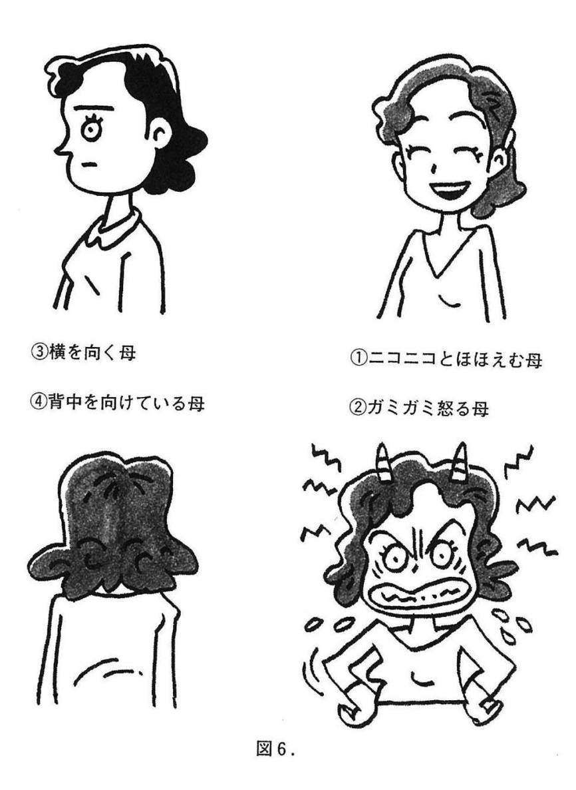

| ドクター・オボの自信が湧いてくる心理学 : 自分を好きになれば人生は楽しい | |
| 於保哲外 | |
| (2002) | |
ドクター・オボの
自信が湧いてくる心理学
自分を好きになれば人生は楽しい
オボクリニック院長・精神科医
於保哲外
この電子書籍は、縦組みの底本を元に作成しました。
ドクター・オボの自信が湧いてくる心理学──目 次
目次
装幀／宗利淳一
イラスト／嘉戸享二
プロローグ●「自分が主役」の生き方をしていますか？
あなたの人生の「主役」は誰？
あなたの人生の「主役」は誰でしょう？
──そんなふうに聞かれたら、あなたはどう答えますか？
「え？ そりゃあ自分に決まってるじゃない。だって、私の人生だもの」
大半の人はそう思うはずです。そして、もちろんそのとおりなのです。あなたの人生の主役はあなた自身であって、ほかの誰でもありません。
なぜこんなあたりまえのことを言うかといえば、せっかくの自分の人生なのに、「自分が主役」になっていない人があまりに多いからです。とくに、私たち日本人に多いといえます。まず、そのことを説明してみましょう。
＊
神経症の一つに、「対人恐怖症」があります。その症状としては赤面恐怖（人前で赤面することを恐れる）や視線恐怖（他人と視線が合うことを恐れる）などがありますが、要は「他人に見られている自分について悩む」神経症です。それも、見ず知らずの他人ではなく、「顔見知りを恐れる」点に特徴があります。
そして、この対人恐怖症、「日本特有の病気」といってもよいくらい、諸外国に比べて日本に多発しています。それは、日本人が人目を気にする国民であるからでしょう。
私たち日本人は、子どもを叱るときに「そんなことをしたら（他人に）笑われますよ」とよく言いますね。じつは、あの言い方は日本人に特徴的なものなのです。
たとえば、欧米人が小さい子どもを叱るときによく使うのは、「それは約束とちがう」という言葉です。〝パパと「○○しない」と約束したのに、キミは約束を破った。それは悪いことだよ〟──そんなふうに叱ることが多いのです。そこには、他人の目を気にする姿勢は感じられません。自分の中のモラル（道徳）こそが行動の基準であるわけです。
それに対して、日本では大人たちもつねに世間体を気にして行動します。つまり、行動を律している基準は、自分の中のモラルではなく、人目なのです。
ではなぜ、私たち日本人はそんなにも人目を気にするのでしょう？
かつて、水田の管理は村単位で行われました。そのため、村としてのまとまりが非常に重要視され、そのぶんだけ日本では「個」が育ちにくかったのです。現代日本にも、その「村社会」の名残が色濃くあるといえます。
いや、名残があるどころか、私たちは昔の日本人よりもずっと人目を気にしています。
昔は、村から一歩外へ出れば顔見知りに会うこともほとんどなく、村の中だけが「世間」でした。だからこそ、東海道五十三次などというのは人目を気にする必要もなく、「旅の恥はかき捨て」で楽しかったのです。しかし現代人は、日本にいるかぎりどこで顔見知りに会うかわかりませんから、つねに心のどこかで人目を気にしています。
日本におけるさまざまな普及率は、五○パーセントを超えるとその後急速に高まると言われています。カラーテレビしかり、マイカーしかり......。なぜ五○パーセントを超えた時点で〝なだれ現象〟が起きるかといえば、それは「隣の人も持っている」ということを意味するからです。ごく一部の人しか持っていないものなら、自分が持っていなくても恥ずかしくない。しかし、お隣さんが持っているものを持っていないのは恥ずかしい。だから買おう──そうした心理が、日本人はとくに強いのです。
「自分が欲しいから、必要だから」という気持ちより、「ほかの人が持っているから」という人目を気にした理由が優先されるのですから、考えてみればおかしな話です。
そのように必要以上に人目を気にして生きるのは、「他人が主役」の人生になっているということです。自分が正しいか否かを世間に判断してもらい、自分の〝幸福度〟を他人と比べて判定する......多くの日本人が、そんな生き方に陥っているのです。
日本人もそろそろ、「他人がどう言おうとかまわない。価値基準は私自身の中にある」という「自分が主役」の生き方に転換すべきときではないでしょうか？
ある女優さんが、次のように語っていました。
「たとえ一○○人のうち九九人までが私のことを『ダメ』と決めつけても、私は私のことを最後まで信じ抜いていこう」
この信念は、人目を気にしてばかりいる「他人が主役」の生き方の対極にあるものといえます。彼女は、芸能人としてのスランプに陥った経験を通じてこの信念を抱き、それをバネにして再起を果たしたのだそうです。
また、孤高の天才ピアニストとして近年脚光を浴びているフジ子・ヘミングさんは、次のように語っています。
「最初の頃、私の弾く『カンパネラ』をメチャメチャにけなした音楽家がいたの。
でも、平気だった。
ぶっこわれた鐘があったっていいじゃない。私の鐘だもの」
「この世に脇役なんか一人もいない。
みんなが主人公」（いずれも、『フジ子・ヘミングの「魂の言葉」』清流出版刊より）
──多くの日本人は、こうした「自分が主役」の生き方の素晴らしさを知るべきでしょう。
「最悪の自分」を愛せますか？
幸せに生きるためには、そして心を病まないようにするためには、何よりもまず、「自分を好きになる」ことがたいせつだと、私は考えています。これこそが本書の出発点であり、テーマであり、結論でもあります。これから私は本書の中で、このテーマをさまざまな角度から語っていきます。
もちろん、誰しも自分はかわいいものです。ただ、多くの人の場合、それはナルシシズム（自己陶酔）としての「自分が好き」であって、ここで言う「自分を好きになる」とはちがいます。
私の言う「自分を好きになる」とは、「自分を一○○パーセント肯定し、受け入れる」ということです。
「え？ それとナルシシズムのどこがちがうの？」と首をかしげる向きもあるかもしれません。では、そのちがいを説明してみましょう。
たとえば、人気ナンバーワンのアイドル・タレントは、きっと「そんな自分が大好き！」と考えているでしょう。しかし、落ち目になって人気がなくなったら、あるいは病気で寝たきりになったら、それでも彼女は「自分が大好き」でいられるでしょうか？ もし「人気アイドルである自分は好きだけど、落ち目になった自分はキライ」であるなら、彼女は私の言う意味での「自分が好き」ではなかったのです。それでは、自分がチヤホヤされることに陶酔するただのナルシシズムでしかないからです。
私の言う「自分が好き」とは、どんな自分であっても同じように好きであること。「こういう自分は好きだけど、こういう自分はキライ」という条件つきの「好き」ではないのです。
私は、クリニックを訪れる患者さんに、しばしば次の二つの質問をします。
「あなたは自分が好きですか？」
「いまの自分に点数をつけるとしたら、百点満点で何点ですか？」
患者さんたちの答えは、不思議なほど似通っています。前の質問については、「好きになりたいけど、なれない」という人、あとの質問については低い点数をつける人が多いのです。少なくとも、「自分が大好きです」「いまの自分は百点満点です」という人は、まずいません。
「心を病んで苦しんでいる人なのだから、自己評価が低いのはあたりまえだ」と思われるかもしれません。しかし、「自分が好きになれない」という患者さんたちと、さきほど例に挙げた「自分が大好き！」というアイドル・タレントは、じつは同じ考え方をしています。それは、「人からほめられる自分は好きだが、そうでない自分はキライ」という考え方です。一見あたりまえに思えるそういう考え方こそが、人生をとてもつらいものにしている諸悪の根源なのです。
わかりやすいよう、たとえ話をしましょう。あなたのお子さんの担任教師が、「オレは成績のいい子は大好きだが、成績の悪い子は大キライだ」と公言していたら、どう感じますか？ たとえお子さんの成績がよかったとしても、「そんな教師に子どもをあずけてはおけない！」という気持ちになるでしょう。当然です。それは教師にあるまじき不当な差別なのですから......。
自分自身に対する姿勢も、じつは同じことなのです。人からほめられる自分だけを好きになって、そうでない自分をきらうのは、やはり不当な、おかしなことなのです。
「自分がキライ」な人は、しばしば自分につらくあたります。必要以上に自分に厳しくなるのです。そしてそれは、教師がキライな生徒に対してつらくあたるのと同じです。そこには愛がありません。そうした愛のない厳しさは、心を傷つけるだけです。
そのように、「自分がキライ」な人にとって、生きることはとてもつらいことになります。そして、そのつらさが昂じていったとき、さまざまな心の病にも結びつくのです。
そして、ここでいう「自分を好きになる」とは、「最悪の自分こそ大好き」になることです。たとえ病気になろうと、失業しようと、好きな異性に振られようと、仕事で失敗しようと、誰に何を言われようと、それでも変わらず「自分が好き」と言いきれるようになること。どんな自分も一○○パーセント肯定すること──そうした姿勢が心の基盤になっていれば、心を病むことはないし、のびのびと人生を送ることができます。
そしてそれは、「自分を甘やかす」のとはちがいます。自分に対する厳しさを持ちつつ、なおかつ「自分を肯定する心」を保つのです。
タテマエの自分が強くなりすぎると......
「自分を肯定する心」について、別の角度から説明してみましょう。
次の図１．は、一人の人間の人格を表しています。この図を、あなたの人格だと思ってみてください。大きな円が人格の全体を表し、その中の三日月形が「あなたの中のオトナ」、小さな円は「あなたの中のコドモ」を表します。
これはもちろん二重人格という意味ではなく、人格の中の大人っぽさと子どもっぽさをそれぞれ象徴していると考えてください。
このうち「オトナ」は、規律や秩序を重んじ、世間体の判断をする立場です。物心つく段階で、「コドモ」から分離して生まれてきます。自分の欲求をコントロールし、「ここではこんなことをしてはいけない」「こうしないと恥ずかしい」と己を律して、周囲や他人に自分を合わせる機能を司っています。
いっぽう「コドモ」は、いわば小さな子どものままの立場。むき出しの欲求・感情を司る立場であり、好き嫌いや甘え・わがまま・欲望・ふざけ・遊び・好奇心などの要素です。
言いかえれば、前者はタテマエの部分で、後者はホンネの部分です。また、もう少し高級な言い方をすれば、前者は「ペルソナ（仮面）」で、後者はペルソナを外した素顔ともいえます。
ペルソナとはラテン語で、英語の「パーソナリティー（人格）」や「パーソン（人）」の語源となった言葉でもあります。本来は劇の中で登場人物がかぶる仮面を意味しましたが、そこから転じて、「人の社会的役割」を意味するようになりました。たとえば、「教師らしさ」や「医者らしさ」の「らしさ」の部分が、ペルソナにあたります。
昨今、事件を起こす問題教師がたくさんいますが、そうした事件の報道を読むと、問題教師も生徒の前では「やさしくていい先生」であることが少なくありません。つまり、教壇に立ち、自分が受け持った生徒に接するときには、その教師は「教師らしさ」というペルソナをかぶっていたわけです。だからこそ、生徒たちには「いい先生」にしか見えなかった。しかし、その仮面の奥には、教師らしからぬ「別の顔」（ホンネの自分）が隠れていたのです。
そして、すべての人間の中には、「ペルソナ」と「ほんとうの顔」の二つの要素が並存しています。物心つかない乳幼児でもないかぎり、「ホンネ＝コドモ」の部分だけで生きている人間はいないし、逆に「タテマエ＝オトナ」の部分のみで構成された人間もいません。
そして、自分の中の「オトナ」と「コドモ」の関係──いわば、対人関係ならぬ「自分関係」──は、心の健康を考えるうえで非常に重要です。
自分の中の「オトナ」と「コドモ」の「仲がいい」人は、精神的に健康です。逆に、「オトナ」と「コドモ」の仲がうまくいっていない人は、精神的に不健康で、心に歪みを抱えています。
では、「オトナ」と「コドモ」の仲がいい・悪いというのは、具体的にどういう状態でしょうか？
世の中には、「羽目を外せない人」がいます。冗談の通じない人、宴会の席でも仕事中と同じ顔つきでかしこまっている人、誰に聞いても「あの人は堅物だから」と評価の一致するような人......。あなたの周囲にも、きっといるはずです。
そういう人は、周囲に対して「オトナ」の顔だけで接していることになります。では、その人の「コドモ」の部分は、どこへいってしまったのでしょう？ それは、心の底にギュッと押しこまれているのです。つまり、自分の中の「オトナ」の部分だけが大手を振って歩いていて、「コドモ」の部分は隅に追いやられ、虐げられている状態です。これこそ、私の言う「オトナ」と「コドモ」の仲がうまくいっていない（＝「自分関係」が良好でない）状態です。
また、仕事やそのほかのことに過度に完璧を求める人、ほんの少しの失敗や計画の狂いもがまんできないような人も、「自分関係が良好でない」場合が多いでしょう。なぜなら、よい意味でのいいかげんさも「コドモ」の特徴であるからです。
自転車のチェーンに適度なゆるみが必要なように、人間も、張りつめてばかりいたら早晩パンクしてしまいます。そして、そうしたタイプは、なんらかの失敗をしたとき、「この失敗を次に生かせばいい」とは考えられません。「ああ、私はなんてダメな人間だろう」と、失敗した自分を責めるほうに気持ちが向かってしまうのです。
私のクリニックにくる患者さんは、十中八、九、そういうタイプです。つまり、子どものころからずっと「いい子」「マジメな子」であり、自分の中の子どもらしい部分を押し殺してきた人ばかりなのです。
それは言いかえれば、ペルソナの部分が強くなりすぎて、その仮面を外せなくなってしまった状態です。人に気を遣い、周囲に合わせてホンネの自分を押し殺してばかりいると、いつしか自分の「心の声」を聴く能力が減退し、ホンネが出せない人間になってしまうのです。
例を挙げましょう。私のクリニックに通っていた患者さんに、Ｉさんという二十代後半の女性がいました。Ｉさんは接客の仕事をしており、仕事柄、毎日大勢の人に接していました。しかし、ある時期から人と接することが苦痛になってきて、やがて会社にも行けなくなってしまいました。聞けば、私のクリニックにくる前にも、うつ病で通院したことがあったとか。
彼女と話をしてみて、私は驚きました。たしかにうつ的な症状が出ているのに、私と話すときにはいつも笑顔で、およそうつ病らしくないのです。彼女が言うには、接客の仕事を長い間つづけるうち、人と話すときには反射的に笑顔を見せるようになってしまったのだそうです。心の中ではどんなに落ちこんでいても、どんなに腹が立っていても、自分の意志に反して笑顔になってしまう。そして、「そんな自分がイヤでたまらない」というのです。
まさに、ペルソナの部分が強くなりすぎた状態です。「明るく社交的なＯＬ」という役割を演じつづけた結果、そのペルソナがへばりついて脱げなくなってしまったのです。
その後、約二年間の通院でホンネを出して人とつきあう練習をした結果、Ｉさんはようやくペルソナを脱げるようになりました。
「おかげさまで、怒るべきときに怒ったり、悲しいときには悲しい顔ができるようになりました」
そんなふうに言って微笑む彼女の顔は、二年前のどこか硬さや暗さのある笑顔とはちがい、輝くばかりの美しい笑顔でした。
Ｉさんの事例はわかりやすいケースですが、自分ではそれと気づかぬうちに、ペルソナを脱げなくなっている人は多いものです。たとえば、「○○ちゃんのママ」「○○さんの奥さん」という役割の枠内でしか人づきあいができなくなっている主婦は、たくさんいるでしょう。
そうしたペルソナを脱いで、ホンネの自分が出せる場所・相手を確保しておくことが、心の健康のためにはたいせつなのです。
対人関係の基礎は「自分関係」
心の中で「コドモ」の部分を押し殺して暮らしていると、「オトナ」の部分ばかりが肥大して、「コドモ」の自分をどんどん隅に押しやっていきます。
そのままの状態がつづくと、やがて心がパンクしてしまいます。次の図２．のように、円の外に「プシュッ！」とはみ出して、対人関係が破綻してしまう状態。なんらかの心の病になるか、あるいは「キレて」しまうのです（この図式で、器質的な障害を除くほとんどの「心の病」が説明可能です）。
たとえば、平成十一年（一九九九年）に東京・文京区で起きた「幼女殺害事件」の犯人は、その典型例でしょう。報道によれば、彼女は小さいころからマジメな「いい子」であり、成人してからもおとなしくてマジメな目立たない女性だったといいます。彼女はきっと、自分の中の「コドモ」をずっと抑圧して生きてきたのでしょう。それが、あの不条理な殺人という、最悪の形で爆発してしまったのです。
それは極端な例ですが、自分の中の「コドモ」を抑圧しつづけると、遅かれ早かれ、なんらかの形で「心のパンク」が起こります。
ひきこもりのように自分の内側に向いた「パンク」と、キレて暴力を振るうような他人に向けられた「パンク」──それは一見まったくちがうように見えて、じつは一枚のコインの裏表です。いずれも対人関係の破綻なのですから......。ずっと自分を押し殺して周囲に合わせてきた人だからこそ、人づきあいがしだいに負担になり、対人関係の破綻という形で爆発するのです。
対人関係の基礎となるのは、「自分関係」です。自分の中の「オトナ」と「コドモ」が良好な関係を保っている人は、対人関係もうまくこなすことができるのです。
そして、自分の中の「オトナ」だけを重視し、「コドモ」の部分を抑圧するという姿勢は、とりも直さず、「自分を半分しか肯定していない」ということを意味します。それは、「人からほめられる自分は好きだが、そうでない自分はキライ」という姿勢と同じです。
一流の人物は「内なる子ども」と仲がいい
では逆に、「自分関係」が良好である──自分の中の「オトナ」と「コドモ」の仲がいい──というのはどういう状態でしょう？ 要するに、前項とは逆の状態です。羽目を外してよいときは思いきり騒ぐことのできる人、ユーモアが豊かで、気軽に冗談を言って大声で笑える人、よい意味での「いいかげんさ」をもち、物事に完璧を求めすぎない人......。そういう人は、自分の中の「オトナ」と「コドモ」のバランスがうまくとれているのであり、心を病むこともまずないでしょう。
スポーツ界や実業界、あるいはどんな世界でも、「一流」と言われる人物には多くの共通点があります。
それは、豊かなユーモアをもっていること、羽目を外して遊んだり、冗談を言うのが好きだということ。また、個性的・独創的な人が多いこと。そして、ときには「わがままだ。独裁者だ」という悪評が立つくらい、「我が道を行く」タイプが多いこと。さらには、初対面の人に対しても物おじせず、心をオープンにしてつきあえること──。
あなたの知っている「一流の人物」を思い浮かべてみてください。いま挙げた要素をすべてもっている人が多いはずです。
いま挙げた要素は、「オトナ」と「コドモ」の二分法でいえば、いずれも「コドモ」の属性です。つまり、一流の人物とは、自分の中にある「コドモ」の要素を抑圧することなく、自然な形で表面に出すことができる人なのです。というより、「内なる子ども」を抑圧せずにのびのびと生きてきたからこそ、「一流の人物」になれたのです。
もちろん、「コドモ」の面を素のまま出してしまったら、たんにわがまま勝手なだけ。それでは人もついてこないし、そもそもまともな社会人としてやっていけません。
つまり、たいせつなのは両者のバランスです。自分の中にある「オトナ」の要素と「コドモ」の要素。時と場合に応じて二つを自在に使い分け、どちらにも偏りすぎないことが、一流の人物の要件なのです。それこそ、内なる大人と内なる子どもの「仲がいい」状態であり、精神の健全さの証なのです。
もう少しわかりやすく言いかえてみましょう。
人間の生き方には、大きく分けて三通りあると、私は考えています。それは、次ページにイラスト（図３）で示した三つの生き方です。
一つ目は、イヤなことはせず、したいことだけをして、わがまま放題に生きること。つまり、「コドモ」の面を素のまま出していく生き方です。
二つ目は、とにかく我慢をしつづけ、やりたいこともやらずに自分を抑えていく生き方。つまり、「コドモ」の面を抑えつけたまま、「オトナ」の面だけを表に出して生きていくことです。
以上の二つは、つづけていけばいつか必ず破綻をきたす生き方です。
それに対し、三つ目の生き方は、自分のキライなこと、苦手なことを、好きになったうえでやっていく生き方です。つまり、キライなことを避けるのではなく、我慢してやるのでもなく、「乗り越えて」やっていく生き方。それこそが、「オトナ」と「コドモ」のバランスの取れた健全な生き方なのです。
次の１章からは、以上述べたことを、もう少し具体的なケースに即して語ってまいりましょう。そして、「自分を好きになる」ために何が必要かについても──。
１章●理想の夫婦は「仲間関係」
「正しい夫婦ゲンカ」の仕方
クリニックに来院される患者さんが既婚者である場合、私はよく、「一度、ご主人（または奥さん）と一緒においでください」と言います。治療を進めるうえで、その人の夫婦関係は非常に重要なポイントであるからです。
夫婦関係の悪化自体が病気の原因となっている場合が多く見られますし、原因ではないにしても、配偶者がどのような態度で患者さんに接するかによって、病像はまったく変わってしまうのです。
そうした治療の過程で、私は「崩壊寸前の夫婦」を数多く見てきました。その経験からつくづく思うのは、「夫婦間には敵か味方のいずれかの関係しかない」ということです。夫婦という関係はあまりに密接すぎるので、「敵でも味方でもない中間の関係」ではあり得ないのです。
夫婦仲が悪くなる直接の原因はさまざまでしょうが、本質的な原因は、夫婦が敵同士の関係になってしまうことに尽きます。
そして、私たちが夫婦関係の〝見直し〟を迫られるのは、子育てが終わったときです。子育て中は、たとえ夫婦関係に問題があっても、それが見えにくい。親としての役割のほうが優先されるからです。しかし、子どもが独立すると、夫婦関係がいわば「むき出し」になってしまいます。
とりわけ、いまどきの中高年夫婦の関係は、昔よりもその「むき出し」度が高いといえます。昔は、子育てが終わっても、たいてい夫婦以外の家族がいたし、地域社会での人間関係も濃密でしたから、夫婦が向き合わなくても生きていけました。しかしいまは、子育て後に夫婦で向き合わざるを得ません。
そのとき、仲のよい夫婦なら、恋人時代の延長のような関係に戻れますが、仲の悪い夫婦の場合、しんどいことになります。従順だとばかり思っていた妻の側から突然「定年離婚」を言い出され、あわてふためく夫......などという話をよく聞きますが、それはまさにそうしたケースでしょう。
ここでいう「仲のよい夫婦」とは、ケンカしない夫婦という意味ではありません。というのも、私が思うに、ほんとうの意味で仲のいい夫婦は、ときにはケンカをして当然だからです。
誰しも、夫婦ゲンカのときには、ふだんは口にしないホンネをぶつけ合います。タテマエを言い合ってケンカすることはあり得ません。つまり、夫婦ゲンカができるということは「ホンネをぶつけ合える」関係を保っているということであり、むしろ夫婦関係の健全さのバロメーターといえます。ホンネをさらけ出してつきあえることこそ、「仲間関係」の要件なのですから......。
次ページの図４．をごらんください。これは、プロローグで示した自分の中の「オトナ」と「コドモ」の関係を応用して、「よい夫婦関係／悪い夫婦関係」を図で表したものです。
「よい夫婦関係」とは、①のように、互いの中の「コドモ」同士でつきあえる関係のことです。
夫も妻も、勤め先や主婦仲間とのつきあいにおいては、「オトナ」の顔をしていなければなりません。つまり、「○○課長」とか「○○さんの奥さん」などという、社会的役割に沿った「ペルソナ」の顔です。
家に帰ってきても、子どもに対しては「父親」「母親」としての役割がありますから、ある程度はペルソナをかぶっていなければなりません。しかし、夫婦二人だけの時間においては、そのペルソナを脱いでつきあうべきです。つまり、夫婦が互いに「コドモ」の部分をむき出しにできる関係です。「互いに子ども時代のような気持ちでつきあえること」こそ、健全な夫婦関係の要件なのです。
「仮面夫婦」という言葉があります。ふつう、夫婦とは名ばかりの冷めきった関係を指しますが、たとえ一見仲のよい夫婦に見えたとしても、互いにホンネが言えない夫婦は「仮面夫婦」ではないでしょうか？ 家の外でかぶっている社会的役割というペルソナ（仮面）を、家の中でも脱げない夫婦なのですから......。
それは、前ページの図４．の②のような状態。夫婦でありながら互いの「オトナ」の部分でしか接していないので、その関係は冷ややかなものになります。
外では脱げないペルソナを、夫（妻）の前では脱ぐことができ、ホンネで話せる──だからこそ、家庭は心からくつろげる「癒しの場」となり得るのです。それができない夫婦なら、二人でいても疲れるばかりではないでしょうか？
一見仲がよいように見え、派手な夫婦ゲンカなどせず、ふつうに会話もある。そのくせ、互いにまったくホンネを出すことができず、タテマエばかり話している。そんな「仮面夫婦」は、ほんとうの意味で仲がよいとはとても言えないでしょう。
つまり、ほんとうに「仲のよい夫婦」とは、ケンカしない夫婦ではなく、「ケンカしてもすぐに仲直りできる夫婦」のことなのです。
子ども時代の兄弟ゲンカや仲間ゲンカを思い出してください。しばらくするとケロっとして仲よく遊んだでしょう。そうであってこそ仲間同士の関係というものです。
私のところにくる患者さんに、夫婦ゲンカしたあと、なんと十年間も一言も口をきかなかったというすさまじい人がいました。最悪の〝冷戦〟パターンであり、「夫婦ゲンカの仕方がヘタ」な例です。
私は患者さんに、「夫婦ゲンカ、大いにけっこうです。ただし、その日のうちに仲直りしてくださいね」とよく言います。タテマエだけで結ばれている冷たい「仮面夫婦」より、ときにはケンカしてホンネをぶつけ合える夫婦のほうが、百倍ましです。夫婦として長い人生をともに暮らしていくためには、ケンカして「ガス抜き」することも必要なのです。適度なガス抜きになるような、「上手な夫婦ゲンカ」を心がけましょう。
もちろん、夫婦ゲンカをしたときに仲直りするのは、なかなかむずかしい。どちらも「悪いのはあっちだ」と思って譲らず、自分の側からあやまろうとしないことになりがちです。
自分からあやまるためには、一つのコツがあります。そのコツを紹介しておきましょう。
「悪いのはあっちだ」という気持ちを無理やり抑えて「オレが悪かったよ」とあやまるのは、つらいことです。それは、自分のほんとうの気持ちを押し殺して行う忍耐の行為だからです。
日本人はとかく「人間、辛抱だ」などと、我慢・忍耐を美徳としてとらえがちです。しかし、私はそうは思いません。我慢など、なるべくならしないほうが精神衛生上よいのですから......。
とはいえ、世の中は思うにまかせないことに満ちています。では、どうしたらよいのでしょう？
私は、我慢のかわりに「能忍」をすることにしています。能忍とは仏教で使われる用語で、「能く忍び、能く慈悲を施す」という意味です。そして、仏の別称でもあります。耐え忍ばなければならないことに満ちた現実世界にあっても、仏はすべてを悠々と耐え、衆生を大きな慈悲の心で包んでいく──そうした広々とした心のありようを「能忍」というのです。
この能忍、耐えることなのですから、一見、我慢や忍耐と同じであるように思えます。しかし、じつは大きなちがいがあります。我慢が自分を抑えていやいや行うものであるのに対し、能忍は自ら進んで、ほんとうの気持ちを押し殺さずに行うものなのです。
夫婦ゲンカの仲直りに即してちがいを説明すれば、我慢は「あやまりたくないけど、いやいやあやまる」姿です。それに対して能忍は、「こうやって妻に対して寛大に振る舞える私は、なんと心の広い素晴らしい夫だろう」と、「自分をほめたたえながらあやまる姿」なのです。プロローグの図１．の「自分関係」でいえば、「我慢は「ホンネ＝コドモ」を押さえつけて「オトナ＝タテマエ」であやまるのに対して、「能忍」は「オトナ＝タテマエ」が「ホンネ＝コドモ」の気持ちを大切にして受け入れながら、ほめたたえつつあやまるわけです。
どちらも「オレが悪かった」とあやまることにかわりはありません。しかし、心のありようは一八○度ちがいます。
もうおわかりでしょう。夫婦ゲンカをしたときに気持ちよくあやまるコツは、能忍の姿勢であやまることです。夫婦は互いの心を映し出す鏡のような存在ですから、気持ちよくあやまると、その気持ちが相手にも伝わります。ブスッとした顔でいやいやあやまるより、能忍の心であやまったほうが、相手の反応もはるかによいはずです。これこそ、正しい夫婦ゲンカの「極意」なのです。
孤立する夫婦たち
アメリカほどではないにしろ、日本の離婚率も上昇の一途をたどっています。かつて、世界でもまれなほど離婚率の低い国として知られていた我が国なのに、一九九○年代に入ってからは右肩上がりで離婚率が上昇。いまや米・英・独・スウェーデンといった世界の〝トップレベル〟に肉薄する勢いです。
離婚急増の原因として、まず指摘されるのは、昔に比べて女性が経済的に自立しやすくなったという点です。たしかに、離婚率の高い国はいずれも先進国ですし、それが大きな要因であることはまちがいありません。
しかし同時に、共同体の崩壊も見逃せない要因だと私は考えています。共同体、とくに地域共同体の崩壊は、夫婦を守ってくれるセーフティー・ガードが一つ消えたに等しい現象だからです。
昔なら、若い夫婦が派手なケンカをすると、隣近所のおじさん・おばさんが割って入ってくれたものです。そして、奥さんの不満はおばさんたちが聞いてやって「ガス抜き」をしてやり、ご主人の不満はおじさんたちがなだめて「ガス抜き」をしてやったものなのです。
「まったくひどいダンナだねえ。まあ、しばらくしたら気もおさまるだろうから、うちでお茶でも飲んでいきなさいよ。夕ご飯もうちで食べるといいよ」
というふうに......。そして、近所のおばさんたちに長々と愚痴を聞いてもらうことによって、奥さんの不満のガスも抜かれ、またふつうの生活に戻っていけたのでした。
しかし、いまはそうした結びつきがもうありません。皿を投げつけ合うような派手な夫婦ゲンカをしても、近所の人たちはただ黙って耳をそば立てているだけです。そして、井戸端会議の話のタネにされるのが関の山。割って入ってくれる人など、ほとんどいません。
いまは、夫婦ゲンカに割って入る人がいるとすれば、仲人かどちらかの親でしょう。しかし、仲人や親が割って入るような夫婦ゲンカは、すでに相当深刻なものであって、かんたんに元どおりの生活には戻れません。
いまどきの夫婦が昔よりかんたんに破綻するのは、一つには、そんなふうに、地域社会による「ガード」がなくなったためでもあります。核家族化と、地域社会の結びつきの希薄化──二つは、束縛が薄れたということである半面、夫婦の孤立化を招いてもいます。そして、孤立しているからこそ、夫婦が「仲間関係」を保つことは、昔に比べて重要なのです。
やってみよう、「夫婦三点セット」
既婚者の患者さんに対して、私はよく「夫婦三点セット」というものをすすめています。セットの中身は、以下の三つです。
１．夫婦で腕を組んで外を歩いてみてください
２．夫婦で手をつないでテレビを見てください
３．ご主人の出勤・帰宅時、奥さんは玄関まで出て、首に抱きついてください
この「三点セット」を励行するよう、すすめてみるのです。離婚寸前の状態であるようなご夫婦にも、かまわずすすめます。というより、そうした夫婦にこそこれをやってみてほしいのです。ごらんになってわかるとおり、この三点の眼目はスキンシップにあります。小さな子どもと母親にとってスキンシップがたいせつであるように、夫婦のスキンシップはたいへん重要です。それは「仲間関係」を保つための鍵なのです。
この三点セットを抵抗なくできるようなら、その夫婦は良好な「仲間関係」を保っていることになります。言いかえれば、夫婦で「子どもっぽさの共有」ができているのです。
「はあ、その三つをやればいいんですね。わかりました、やってみます」
そんなふうに気軽に言ってくれるようなら、「ああ、この夫婦はだいじょうぶだな」と感じます。もし、その病気が夫婦関係の悪化に起因するようなものだったとしたら、三点セットのできる夫婦は、元どおり仲よくなれる可能性が高いのです。
また、直接には夫婦関係の悪化と関係ない病気だったとしても、夫婦が「仲間関係」を保っていることは、治療の大きな助けになります。その二つの意味で、「この夫婦はだいじょうぶだな」と思うのです。
逆に、この三点セットをすすめたとき、「とんでもない！ そんなこと、絶対できません！」と強い拒否反応を示す人がいます。そうした人は、ちょっと深刻です。夫婦関係が「仲間関係」になっていないことを示しているからです。「夫婦には敵か味方かの関係しかあり得ない」とさきに述べたとおり、仲間でないということは、敵同士の関係になっているということです。その関係を改善させないことには、治療もうまく進みません。
三点セットを進めるもう一つの理由も、そこにあります。離婚寸前のように見えた夫婦であっても、意を決してこの「三点セット」を励行してみると、それがきっかけで関係が改善されることがあるのです。「そんなバカな」と思うかもしれませんが、ほんとうのことです。
なにしろ、夫婦はもともと好き合って一緒になった仲なのですから、どんなに仲の悪い夫婦でも、互いに強く惹かれ合う部分をもっているのです。
しかし、長年の心のすれ違いが積み重なって、二人の間に見えない高い壁がそびえたっている──そういう状態でしょう。「三点セット」を励行することは、その見えない壁をこわすきっかけになるのです。
次項で、その実例を紹介してみましょう。
〝十年越しの夫婦ゲンカ〟を終わらせたものとは？
既婚者の心の病気のうち、女性の病気は、夫婦関係の悪化が原因となる場合がいちばん多いものです。逆に、男性の病気は、仕事上の悩みが引き金になる場合が多いのです。不思議なくらい、そう色分けすることができます。
「それは、主婦の場合には家ですごす時間が長いのに対し、夫の側は会社ですごす時間が長いからでは？」
──そう思われるかもしれませんが、そうではないのです。専業主婦にかぎらず、たとえバリバリのキャリアウーマンであっても、仕事上の悩みから心を病むことは少ないのです。また逆に、男性の場合には、どんなに夫婦仲が悪くても、そのことが原因で心を病むことはごく少ないのです。家庭と仕事のどちらに〝人生のウエイト〟を置いているかのちがいかもしれません。ともあれ、じつに興味深い現象です。
さて、以下に紹介するのは、「『正しい夫婦ゲンカ』の仕方」の項でも触れた、「十年来ご主人とまったく口をきいていなかった」という女性のケースです。この〝十年越しの夫婦ゲンカ〟の結果、例によって、奥さんの側だけが心の病になりました。うつ病です（専業主婦がうつ病になる場合、冷え切った夫婦関係が原因となることが多いのです）。
女性は、私のクリニックを訪れた最初の日、こう言いました。
「離婚したいと思っているのですが、私がうつ病のままでは、離婚してから働きに出ることもままならないので、離婚できません。だから、離婚するためにうつ病を治したいのです」
私のクリニックには離婚寸前の夫婦もよくきますが、さすがに、「離婚したいから病気を治してくれ」と言われたのは初めてでした。まさか、「わかりました。離婚のお手伝いをしましょう」とは言えません。そこで、私はこう言いました。
「奥さん、あなたの病気はきっと治りますよ。夫婦三点セットをやればね」
そして、三点セットの中身を説明すると、当然のことながら、彼女は強い拒否反応を示しました。
「顔を見るのもいやで、十年間口もきいていない相手なんですよ。そんなこと、できるはずがないじゃありませんか！」
「でも、これができないようならうつ病は治りませんよ」と私。
彼女は眉をしかめてなにやら思案したあげく、「夫と仲直りしたくはないですが、それでうつ病が治るなら、やります」と言って、帰っていきました。
うつ病になるような人は、とかくマジメすぎるものです。彼女もたいへんマジメな人だったので、私のすすめた「夫婦三点セット」を、言ったとおり忠実に実行したのでした。
次にクリニックにきたとき、彼女はこう言いました。
「先生の言われた三点セット、一人ではとてもできそうにないので、帰り道に夫の会社に電話したんです。『あのー、あなたが帰ってきたら首に抱きつくことになりましたので、よろしくお願いします』って」
しかし、あいにくその日、ご主人はなかなか帰ってこなかったそうです。もともとご主人は、夫婦仲が冷え切っていたために「帰宅拒否症候群」ぎみだったのです。
「深夜の一時、二時になっても、まだ帰ってこなくて......。でも、『今日という機会を逃がしたら気持ちが萎えてしまって、首に抱きつくなんてもうできない』と思ったので、私、眠らないでじっと待っていたんです」
そして、深夜三時すぎ──。ようやくご主人が帰宅。そこで、彼女は玄関先に駆け出て、目をつむったまま「えいやっ！」とばかりご主人の首に抱きついたとか。
と、そのとき、彼女自身も予想しなかったことが起きました。目に涙があふれ、止まらなくなったのだそうです。
「自分の中に、自分で壁を作っていたんですね。でも、思いきって夫に抱きついたことで、その壁を破れたという気がしたんです」
そして三日後、今度は「三点セットその二」として、腕を組んで歩いたといいます。用事があって一緒に出かけたとき、思いきって腕を組んだのだそうです。
そして、しばらく腕を組んだまま黙って歩いていたところ、ご主人がポツリとこう言ったとか。
「なあ、引っ越しをしようか」
彼女には、一見唐突なその言葉の意味がすぐにわかりました。つまり、「もう一度、一からやり直してみよう」という、遠回しな意思表示だったのです。
その日を境に、二人はそれまでの十年間がウソのように、仲のよい夫婦となりました。そして、ほどなく彼女のうつ病は全快したのです。なにしろ、夫との不仲こそが病気の原因だったのに、それが消えたのですから、治るのも当然といえます。
これは、「夫婦三点セット」が劇的な効果を上げた成功例です。しかし、ここまで劇的でなくても、三点セットの励行が夫婦関係、ひいては家族関係の改善に役立ったという例は、枚挙にいとまがありません。「うちはもう冷え切っているから、そんなこと......」「こんな年になって、そんなこと......」──そう思うご夫婦にこそ、おすすめします。
夫を「リストラ自殺」させないために
いまは、家庭をめぐる問題が大きくクローズアップされている時代です。ひきこもりや児童虐待の増加など、家庭をめぐる深刻な問題が多いし、長引く不況で依然として多いサラリーマンのリストラも、やはり「家」の問題といえます。日本の父親はとかく家に居場所がない存在だったのに、リストラされて無職になると、「家庭に戻ってきてしまう」のですから......。
リストラされたとき、その夫が家庭に「居場所」があるか否かも、それまでの夫婦関係によります。夫婦の間に「仲間関係」が成立していた場合には、リストラされた夫にもちゃんと「居場所」があります。つまり、夫婦手を携えて「がんばって再就職しよう」と言い合うことができるのです。しかし、仲間関係でなかった夫婦の場合、リストラされた夫はほんとうに悲惨な存在になってしまいます。
私が思うに、リストラを苦にして自殺してしまう夫は、家庭に「居場所」がなかったケースが多いのではないでしょうか。もちろん、誰にとってもリストラはつらいものですが、妻がリストラされた夫に冷たく接すれば、そのつらさは極度に増幅されてしまうのです。
日本の自殺者は、一九九八年に初めて年間三万人を突破しました。そして、以後十四年連続で三万人以上の自殺者が出ています。年間交通事故死者数の約三倍。平均寿命が下がるほどのたいへんな数です。
しかも、自殺者のうちとくに多いのが五十～六十代の男性であり、長引く不況によるリストラ・倒産・経営難が急増の背景にあることは明らかです。
それにしても、あまりにも脆い。戦中戦後の混乱期に生を享け、日本の貧しく苦しい時代をたくましく生き抜いてきたはずの中高年男性たちが、いつからこんなに脆くなってしまったのでしょうか？
精神科医をしていると、患者さんから「死にたい」と言われることも多いので、私は人一倍自殺という行為に関心があります。日本の自殺の傾向性についてじっくり調べたこともあります。その結果わかったのは、日本には以前から老人の自殺が多く、しかも、「もうなんの役にも立たない私だから、生きていても仕方ない」という理由で死を選ぶケースが目立つということでした。
このことは、「働かざる者食うべからず」ということわざに象徴されるとおり、日本社会の根底に、「役に立たない人間は生きていても仕方ない」という残酷な価値観が根強くあることの反映でしょう。近代以前の「姥捨て」は、まさにそうした価値観によって行われたのです。
中高年男性の自殺にも、そうした価値観が影を落としています。会社でバリバリ働くことで自分の有用性を確認してきた世代にとって、リストラや倒産はたんなる「失職」ではありません。それはまさに、「あなたはもう役に立たない」と宣告されたに等しいのです。
戦前までの父権社会なら、父親であるだけで家族が敬ってくれたので、肩書を失っても心の拠りどころがありました。が、父権が揺らいでいるいまは、会社での地位が〝最後の砦〟である人も多いので、なおさらです。
男性が心を病む場合、会社でのトラブルが引き金になるケースが多いことは、すでに述べました。多くの男性は、家庭に少々のトラブルがあっても平気なのに、会社でのトラブルでいともたやすく心を病むのです。このことは、大半の日本人男性がいまなお「会社人間」であることを示しています。
中高年男性が、「会社がすべて」とか「役に立たないなら生きていても仕方ない」という価値観を捨てること。それこそ、〝リストラ自殺〟をこれ以上増やさないための抜本的対策です。
もしも読者のあなたが主婦で、ご主人がリストラの危機にさらされているなら、どうか、あなただけはご主人に「会社をやめても、あなたという人間の価値は少しも変わらないわ」と言ってあげてください。その一言が、ご主人を〝リストラ自殺〟から救うかもしれません。
苦しいときに助け合ってこそ夫婦なのですから──。
コラム●ほんとうの「リラクセーション」とは？
ストレス解消のための音楽、香り、画集など、じつにさまざまな〝リラクセーション・グッズ〟が世に出回っています。私は、そうしたものを否定するつもりは毛頭ありません。それらにはきっとそれなりの効果があるのでしょう。
我がクリニックでも、脳波をα波（リラックスしたときに出る脳波）に導くための器械を治療に用いています。
ただ、モノによるリラクセーションはあくまで補助的なものだと思います。〝リラックスのための基本〟ができていない人がリラクセーション・グッズを山のように使ったところで、それは、ずっとお風呂に入っていない人が香水で臭いをごまかすようなものでしかないでしょう。
では、リラックスのための基本とは何かといえば、なによりもまず、心を開いてホンネでつきあえる相手がいること。これが基本中の基本です。それは配偶者でもいいし、尊敬できる上司でもいいし、昔からの親友でもいい。自分をすべてさらけ出して何でも話せる相手が一人でもいれば、その人と対話することこそ最高のリラクセーションでしょう。
「リラックス」とは、いうまでもなく「緊張を解く」という意味ですが、何もせずにじっとしていることがリラックスとは限りません。たとえば、重度の精神分裂病患者はたいていただじっとしていますが、そうした人の筋電図をとってみると、リラックスどころか全身の筋肉が異様に緊張しています。
逆に、働くのが楽しくて仕方ないという人にとっては、仕事それ自体が一種のリラクセーションでもあるはずです。
小手先のストレス解消法にあれこれ手を出すよりは、心を開いてつきあえる相手をつくること、仕事を楽しむことができるようあれこれ工夫することのほうが、深いリラックスに結びつくのです。
上手にリラックスするためには、それなりの努力と工夫が必要です。たとえば、ヨガや太極拳、自律訓練法は、リラックスするための技術の体系でもあります。
少し前に、「たれぱんだ」というパンダのキャラクターが〝癒しグッズ〟として流行りました。聞けば、その愛好家の中には中年男性も多かったとか。「気持ち悪い」と思う向きもあるでしょうが、私はむしろよい傾向だと思います。酒やギャンブルくらいしかストレス解消法のなかった日本の男性が、新しいリラクセーションを模索し始めたということなのですから......。
２章●「家族の問題」の根っこにあるもの
「人類史上初の激変」が進行中
児童虐待やひきこもりの激増など、家族をめぐるさまざまな問題が、年を追って深刻化しています。それは、いったいなぜでしょうか？ 「家族をめぐる心の問題」を扱うこの章では、そのことを考えてみたいと思います。
数年前、私は、東京・新宿の紀伊國屋ホールで開かれた「家族を考える」というシンポジウムに出席しました。私以外のパネラーは、霊長類学者の河合雅雄さんと、医師で探検家の関野吉晴さん。このシンポジウムは、私にとって非常に示唆に富むものでした。
河合さんは、京大霊長類研究所で長年サルの研究をしてこられた方。精神科医の河合隼雄さんのお兄さんでもあります。また、関野さんは、人類がアフリカで生まれて世界へ散っていくまでの道程を逆に進み、人類の起源をたどる壮大な旅を、八年以上にわたってつづけられた方です。その旅の記録は、テレビ・ドキュメンタリー『グレートジャーニー』シリーズにまとめられています。
河合さんは長年研究してきたサルを通して、関野さんは五万キロ以上に及んだ旅の途上で見た先住民族の家族を通して、そして私は精神科医としての経験を通して、それぞれが家族というテーマについて考えてきたことを語り合う、有意義なシンポジウムでした。
とりわけ、目からウロコが落ちるような気持ちにさせられたのは、「家族の起源」についての河合さんの話です。
河合さんによれば、我々の遠い祖先がサルとして森の中で暮らしていたころには、家族というものはまだなかったのだそうです。なぜなら、森の中には食べものが豊富にあるし、樹上生活をしているぶんには獣に襲われる危険もごく少ないから、母親だけで子育てができたからです。
家族の最小単位が「父・母・子」であるとするなら、たしかに母と子だけでは家族とは呼びにくいでしょう。
しかし、森に住んでいたサルたちがサバンナに生活の拠点を移す──その過程に数十万年かかっているといわれているのですが──にあたって、家族をつくる必要性が生まれました。父親が母と子を敵から守り、食べものも確保しなければならなくなったからです。これこそが家族の起源だと、河合さんは言われるのでした。
そしてサルたちは、サバンナに降りてヒト化していくわけですが、サバンナでは、敵から身を守るためにいっそう結束した群れをなして行動するようになります。これこそが、「村」の遠い起源なのです。
たいへん考えさせられる話でした。家族というものは、サルの時代には存在せず、ヒトの誕生と同時に「誕生」したのです。また、「村」の誕生と父親の誕生も、それとほぼ同時期であったことになります。そしてもちろん、それら四つの「誕生」は、互いに密接な関連をもっていました。
河合さんによれば、家族および父親が「誕生」したのは、たかだか五百万年前。それに対し、母と子の関係は、二億年前の哺乳類の誕生にまでさかのぼることができるのだそうです。父と子の結びつきよりは母と子の結びつきのほうがはるかに早いわけで、それを考えれば、母と子の絆が強いこともしみじみ納得できます。
しかしいま、人類は、五百万年つづいてきたその「必然性」がなくなった時代に生きています。
いまの時代、「子どもを育てるためには父親に守ってもらわなければならない」でしょうか？ 「外敵から身を守るためには家族をつくり、群れをつくらなければならない」でしょうか？ 答えはもちろん「ノー」です。家族をつくらなければならないという必然性、父親がそばにいなければならないという必然性は、もうないのです。とくに女性にとっては、独身でいたほうが何かと気楽な時代でもあります。
人類誕生以来、五百万年にわたってつづいてきた「家族でなければならない時代」が、終わりを告げたのです。その意味で、いまは人類がかつて体験したことのない奇妙な時代といえます。
先進諸国では、「共同体の崩壊」が急激に進行中だと言われています。日本を見ても、私の子ども時代にはまだ濃厚に残っていた地域社会のあたたかいつながりが、もうほとんど残っていません。近所のおじちゃん・おばちゃんたちが子どもたちを我が子のように可愛がり、親身に心配してくれた時代──それはもう、ノスタルジーの中の存在でしかありません。
しかしそれは、昔の人の心があたたかく、いまの人が冷たいということではないでしょう。「共同体である必然性」が年を追って薄れてきているから、その反映として地域社会の結びつきも薄れてきているのです。
家族をめぐるさまざまな問題が深刻化しているのも、じつは、こうした一大構造変化が根本的原因なのです。
「父権の喪失」は時代の必然
「共同体の崩壊」──それは、なにしろ五百万年来の伝統が崩壊するのですから、人類史の大転換期といえます。
そして、共同体の崩壊とは何を意味するかといえば、何よりもまず、「父親の存在価値がなくなる」（少し控えめに「役割が薄くなる」といってもよいですが）ということなのです。
父親は、外敵から家族を守り、食糧を確保するのみならず、「村」と家族を結ぶ役割も果たしてきました。村という一つの共同体の中で、その家族がどういう地位にあるかは、父親によって決まりました。たとえば、村で橋を架けるという共同作業をする場合、その作業に従事するのは父親でした。だからこそ、父親の地位によって家族の地位も決まったのです。
いちばんわかりやすい例としては、江戸時代の幕藩体制（すなわち村）における「家」があります。当主たる父親がたとえば失踪してしまったら、即「お家取り潰し」になってしまったのです。
つまり、父親は一家を代表する存在であり、まさに「当主」（戸主・主人）でした。しかも、そうした役割は封建社会になってから始まったわけではありません。「村」という共同体が始まった当初から、すでにそうであったのです。もちろん、日本固有の現象でもなく、どこの社会でも基本的には同じでした。
その共同体が崩壊し、家族である必然性も薄れてしまえば、それにつれて父親という存在の重みが薄れるのも、当然のことです。
「父権の喪失」が叫ばれて久しいですが、家庭における父親の権威が失墜しているのは、そのような構造的要因によるのです。「昔の父親は強かったが、いまの父親は弱い」というわけではありません。
かつて、子どもの結婚を許すか許さないかの権限は、父親が一手に握っていました。共同体という土台がしっかりとあったからこそ、父親たちはそうした権威を発揮できたのです。しかし、いまは土台そのものがないのですから、いまの父親に「権威」を求めるのは無理な注文というものです。
では、父権喪失が必然となったこれからの時代、父親たちはどう生きたらよいのでしょう？
これからの時代に求められる父親像とはどのようなものでしょう？
端的に言えば、それは〝父権などというものに頼らない父親〟です。父親である以前にまず「自立した個」であり、ほかの家族を上から権威で押さえつけるのではなく、家族との対等の仲間関係を保てる父親──それこそが、これからの時代に必要とされる父親像です。
仲間関係に徹するかぎり、父親にもまだ存在意義はあります。なぜなら、女性の社会進出が目覚ましい昨今とはいえ、やはり、〝社会の中で生きていく術〟をいちばん熟知しているのは、母親よりも父親であるからです。したがって、家族が社会に向き合う局面においては、父親のもつ経験と知恵が役に立つのです。
家族という対等な仲間の中にあって、「対社会」の面を担当するという役割分担をきちんと果たすこと。そこに力を尽くすべきであって、それ以上の権威など、これからの時代の父親には求められていないのです。
児童虐待は増えるべくして増えている
児童虐待は、十年前に比べて約十倍にも増えたと言われています。児童相談所への相談事例も、平成十一年（一九九九年）度に初めて一万件を突破し、その後も増える一方のようです。親が子どもを虐待の果てに殺してしまう無残な事件もあとを絶ちません。
そして、「父権の喪失」同様、児童虐待の激増もまた、共同体の崩壊にともなう構造的なものです。
「親はなくとも子は育つ」という古い言葉があります。なぜ、かつてこのように言われたかといえば、親が早死にするなどしても、遺された子をかわりに育ててくれる「共同体」があったからです。家族は総じて大家族であったし、地域共同体の中にも濃密な人間関係がありました。周囲の人々がかわるがわる、親のかわりをつとめてくれたのです。
それは、親がいる子の場合にも同じでした。親がどこかへ出かけるときには、気軽に預けられる相手が必ずいました。子育てに一人で悶々と悩む母親など、ほとんどいませんでした。つまり、昔の子育ては、共同体の中で「みんなで行うもの」であったのです。だからこそ「親はなくとも子は育つ」という言葉も生まれてきたのでした。
さきに紹介した「グレートジャーニー」の関野吉晴さんは、旅の途中、行く先々の土地で、自然に溶けこんで暮らしている先住民族たちと交流を深めたそうです。とくに、奥アマゾンの森に暮らす狩猟採集民族「マチゲンガ族」とは、「グレートジャーニー」の始まる前から、二十年以上にわたって交流をつづけています。
関野さんによれば、マチゲンガ族は総じて子だくさんですが、親はみな徹底して放任主義で、「子どもたちは勝手に育っている」という印象であるといいます。
その話をうかがいながら、私は、「昔は日本もそうだったなあ」としみじみ思ったものです。そして、日本やマチゲンガ族にかぎったことではなく、どの国でも昔はそうだったのです。
共同体の崩壊で失われたものは、〝赤ん坊のめんどうをみてくれる大人〟だけではありません。
かつての地域共同体の中では、近所の子どもたちはいっしょに遊ぶなかで〝兄弟的存在〟になることができました。そのことが、家庭の子育て機能をかなりの程度まで補ってくれていたのです。子どもたちは、自分より少し年上の友だちを兄・姉のように慕い、必死でその真似をしたものです。そのこと自体が、なによりの教育になっていました。
親による子育ては、多かれ少なかれ「管理」となり、「押しつけ」になります。しかし、近所のワンパク仲間にもまれながら自然な形で行われる「教育」には、管理も押しつけもありません。だから、親による教育よりむしろ効果的なものです。親の言うことをあまりきかないワンパク坊主も、近所の〝兄貴的な友人〟の言うことならちゃんと聞いたものでした。
しかしいまは、近所の子ども同士の連帯、とりわけ年代の異なる子どもたちの関係が、昔に比べてたいへん薄いものになりました。子ども自体が昔に比べて圧倒的に少ないうえ、塾通いなどが忙しくて遊ぶ時間も少ないし、遊ぶ場所もままならないのですから、無理もありません。そのうえ、テレビゲームのような一人遊びばかりが増えたため、昔のように集団で遊ぶということがあまりありません。
さらには、昔の「ガキ大将」のような、兄貴的役割で子どもを引っぱってくれる子どもが、少なくなりました。
そして、近所の子どもたちとの連帯も薄れたうえ、いまは一人っ子も多いので、兄・姉が子育ての助けになってくれる面も薄れています。その意味でも、いまは昔より子育てがむずかしい時代なのです。
共同体の「子育て機能」が失われたいま、「親はなくとも子は育つ」という時代は終わり、親だけで子育てをしなければいけない時代になりました。そして、じつはそれは、過去五百万年の人類史上、未経験の仕事なのです。だからこそいま、親子の関係にさまざまなきしみが生まれているのです。児童虐待の激増も、そのきしみの一つといえます。
親だけで子育てをしなければならないうえ、夫が子育てに非協力的なら、若い母親一人に子育ての負担がずしりとのしかかります。これはたいへんなことで、虐待にまで至らなくても、子育ての重荷に悲鳴をあげている母親はたくさんいるはずです。
児童虐待事件が報じられると、多くの人は「とんでもない親だ！」と声高にその親をなじり、背後にある問題に目を向けません。しかしじっさいには、児童虐待の激増も、先進国に起こるべくして起きている構造的問題なのです。
私の妻の父・久徳重盛（名古屋・「久徳クリニック」元院長）は、ベテラン小児科医です。診察・治療を通して、母と子の変遷を見てきた人なのです。その義父に言わせると、昭和二十年代までの日本の母親は、世界に冠たる「理想の母親」であったとか。それに対し、現在の日本の母親たちは、世界最低レベルの「ダメな母親」になってしまったと言います。この急激な変化を診察室で目の当たりにしたことが、義父が『母原病』（サンマーク出版）というベストセラーを書く契機になったのでした。
母原病というネーミングから誤解されがちですが、あの本の主張は「母親が悪い」ということではありません。むしろ、「社会が豊かになりすぎると、子育て機能が崩壊し、隣近所の人情も薄れていく」という主張であり、共同体の崩壊という現象を間接的に述べたものなのです。
「母原病」を、「母親が原因で病気になっている」ととらえるのは表面的な見方で、むしろ、「母親が賢くならなければ、この事態は乗り越えられませんよ」と、母親たちに警告を鳴らしたのが、『母原病』という本だったのです。
そして、その警告どおり、児童虐待など、母と子の問題は年々深刻化しています。
虐待をする母親というのは、総じてマジメで、子育てに対して自信がなく、自分に対する攻撃性が強いものです。そうした母親にカウンセリングをすると、きまって、「こんな自分が大嫌いです」と絞り出すような声で言います。彼女たちは、いつも自分をいじめてきたからこそ、自分の分身である子どももいじめるようになったのです。
少し前に、「上の子が愛せない」というテレビ・ドキュメンタリーが放映されたことがあります。児童虐待には、上の子──第一子が虐待の対象になる事例が多いのだそうです。その理由を私なりに考えれば、「上の子こそ、親自身を最も色濃く投影するものだから」ということだと思います。平たく言えば、上の子がいちばん親によく似るのです。だからこそ、「自分がキライ」で〝自分イジメ〟の傾向が強い親は、その攻撃性を自分に似ている上の子に向けがちなのでしょう。
逆に、そうした母親が自分をきちんと愛せるようになれば、子どもを虐待することもなくなります。したがって、児童虐待の急増に対する根本的な処方箋も、親の側が「自分を好きになる」ことにあるのです。

世界一深刻な、日本の「共同体崩壊」
「父権の喪失」も、「児童虐待の急増」も、共同体の崩壊が根っこにあることを説明しました。そして、共同体の崩壊はほかにもさまざまな問題に影を落としています。
たとえば、いわゆる「学級崩壊」などの学校の問題も同根です。学校は本来、勉強を教える場でこそあれ、子育ての一端を担うような場所ではありません。しかし、共同体が崩壊したことで、学校にも「子育て機能」が求められるようになってきました。これは、明らかな過剰負担です。その過剰負担が、さまざまな学校の問題の根っこになっています。
また、共同体が崩壊し、共同体に支えられていた部分が家庭にのしかかってくるため、家族の各自が感じるストレスも総じて過大になります。だからこそ、家庭内にも問題が生じやすくなるのです。
現代日本に起こっているさまざまな家族の問題の根本には、そうしたことがあります。しかし、大半の人はまだそこに目を向けていません。個々の親たちや子どもたちの問題だととらえている人が多いのです。「昔の親たちはしっかりしていたが、いまの親はダメだ」「昔の子どもに比べ、いまの子どもは根性がない」というふうに。じっさいには、そういう問題ではないのですが......。
共同体の崩壊は世界的な現象ですが、それは、先進国であればあるほど顕著です。「先進国」とは、「文明が進んだ国」であると同時に、「共同体の崩壊が進んだ国」でもあります。
そして、共同体の崩壊が世界一深刻なのは、じつは日本です。なぜなら、その崩壊が最も急速に進行してきたのが、明治以降、とりわけ戦後の日本であるからです。
昭和二十年代までは「世界一子育てがうまかった」日本の母親たちが、半世紀経ったいまでは、「世界一子育ての下手な母親たち」になってしまった──その背景にあるのは、日本社会の急激な変化です。江戸時代まで、欧米流の個人主義がまったく根づいていなかったのに、明治になってからの「西洋に追いつけ、追い越せ」で、急激に都市化が進み、社会の欧米化が進み、「村」的な人間関係が薄れていきました。
西欧の場合はもっとゆっくりと崩壊が進行したから、対処するための時間もありました。しかし日本の場合、変化が急激だったからこそ、母と子の問題も深刻にならざるを得ないのです。しかも、「和をもって貴しとす」という言葉もあるとおり、日本ほど共同体の秩序が重んじられた国もありません。だからこそ、それが崩壊したあとの事態も深刻なのです。
また、共同体の崩壊とともに、高齢化の進展についても、日本はいま世界最速で進んでいます。二重の意味で、日本は世界の「トップランナー」なのです。つまり、日本がこれから直面する事態にどう対処するかを、いささか大げさに言えば、世界が見守っているといえます。
新しい形の家族関係
では、いったいどうしたらよいのでしょう？ いまさら「昔ながらの共同体を再構築しましょう」といっても、そんなことはできるはずがありません。
人類の歴史は、「束縛からの解放」を推し進めてきた歴史でした。たとえば、「女性解放」という一つの視点から眺めてみても、それはわかるはずです。また、交通機関や通信機器の発達など、テクノロジーの発達の歴史も、距離や労働という束縛からの解放にほかなりません。だからこそ、「共同体という束縛」からも、解放されたいというベクトルが強く働き、それに沿って共同体の崩壊は進んできました。したがって、いまさらそれを逆行させることは不可能なのです。
だとすれば、深刻化する「家族の問題」を解決するには、家族のほうを変えるしかありません。すなわち、共同体に頼らずにやっていく新しい形の家族に変えていくのです。
「村」的な共同体が崩壊し、父親の存在価値がなくなったいまという時代は、家族であることの必然性がもはやない時代です。近代までの家族は必然性という基盤の上につくられたのに対し、いまの家族は基盤のないところにつくられます。だからこそ、新しい基盤が必要なのです。その「新しい基盤」になり得るのは、「自立した個」です。これからの時代は、家族のそれぞれが「自分関係」の良好な「自立した個」でなければ、まともな家族になれない時代なのです。
これまで、日本の家族は、夫婦にせよ親子にせよ、依存関係か上下関係が基本になっていました。たとえば、「親が上で子どもは下。子は親の言うことに絶対服従」という上下関係や、「夫が上で妻が下」という上下関係、あるいは、「妻が夫に依存し、夫も妻に依存する」という相互依存関係です。
「夫を失ったとたん、まるで生活能力のない妻」、「妻を失ったとたん、家のことが何一つできない夫」というのは日本人によくあるパターンですが、それらはまさに、夫婦関係が「相互依存関係」になっているケースです。双方とも、「自立した個」にはなっていないのです。
そうした依存や上下の関係を超え、それぞれが「自立した個」であるような家族が、これからの時代に求められる家族像です。
「自立した個」などというと、なんだかむずかしく聞こえるかもしれません。わかりやすく言うなら、家族がそれぞれ「仲間」であるような関係──それが、私の言う「自立した個」が構成する家族なのです。
私が本書でくり返し「自分関係を良好に保つこと」のたいせつさを説いている理由も、一つにはそこにあります。心の病を治すためのみならず、現代人が家族をつくって生きていくためにも、自分関係を良好に保ち、家族間の「仲間関係」を築くことが必要なのです。
映画でも有名になったマンガ『釣りバカ日誌』をご存じだと思います。私はよく、「仲間関係」のわかりやすい例として、あの作品を引き合いに出します。
あのマンガでは、主人公のハマちゃんとスーさんは、釣りという共通の趣味を通して仲間の関係を結んでいます。スーさんはハマちゃんが勤める会社の会長という立場なのですが、釣りを楽しむときには、そうした上下関係をいっさい持ちこみません。仲間関係とはそうしたものなのです。すなわち、上下関係でも依存関係でもなく、利害で結ばれた関係でもない、対等の関係──そうした関係であってこそ、「仲間」と呼べるのです。
そして、家族同士がそうした仲間関係を結んでいたなら、その家族の成員は「自立した個」であり、健全な関係を営んでいる家族といえるでしょう。
日本の家族の八割は、すでにこわれている
「うちの家族は果たして仲間関係になっているだろうか？」と、首をかしげる向きもあるでしょう。それは、ふだんの平穏な生活の中ではなかなか判定しにくいところです。
仲間関係になっている家族とは、いっしょにバカな遊びをして腹の底から笑い合うことのできる家族です。つまり、会社や近所づきあいの中ではなかなか見せられない「子どもの自分」を、思いきり出し合うことのできる家族です。言いかえれば「子どもっぽさを共有できる関係」ということであり、それができれば仲間関係が成り立っているといえます。
また、「仲間関係の家族」は、何か困った問題が起きたとき、力を合わせてその問題に立ち向かうことができます。
逆に、上下関係、依存関係で成り立っている家族は、ふだんの生活の中では仲よさそうに見えても、問題が生じたときに、「仲間関係」ではないことがあらわになってしまいます。
たとえば、息子が不登校になったとき、「おまえが甘やかすからこんなことになるんだ！」「なによ、あなたこそ子育てのことを全部私まかせにして！」と、責任のなすり合いに終始してしまいます。夫婦で力を合わせて事態に立ち向かおうとは、なかなか思えないのです。
私は、精神科医としての仕事を通じて、たくさんの崩壊した家庭を見てきました。たとえば、私のクリニックに通院中の息子さんが家庭内暴力をふるっている真っ最中に、母親が助けを求めて電話をかけてくる、などという修羅場も少なからず経験しています。
また、そこまで深刻でなくても、家族の一員が心を病んだとき、家族関係の歪みが原因になっていることはたいへん多いものです。
そうした経験をふまえて思うのは、「日本の家庭の八割方は、すでにこわれているのではないか」ということです。八割というのはべつに統計調査に基づいた数字ではありませんが、実感としてそう思うのです。
「仮面夫婦」があるように、「仮面家族」もあります。すなわち、いまは取り立てて問題が起きておらず、傍目には仲がいいように見えても、実質的には家族が「敵同士」になってしまっている家族です。家庭内暴力やひきこもりなどのじっさいの問題が起きている家庭がかりに一割あるとしたら、潜在的にそうなる可能性を孕んだ「仮面家族」も、残り九割のうち七割くらいはあるような気がします。
大げさに聞こえるでしょうか？ しかし、たとえば親子の会話、夫婦の会話がまったくない家庭など、いくらでもあるはずです。子どもたちは食事をすませるとスーッと個室に入ってしまい、食卓に残った夫婦二人にも会話らしい会話がなく、テレビの音だけがけたたましく響く......そんな光景はありふれています。そうした家庭は、実質的にはすでにこわれているのです。
それでも、ひきこもりなどの深刻な問題に至らないかぎり、多くの人はその状態を改善しようとも思わないでしょう。「うちの子も思春期だから、気むずかしいのはしょうがないな」くらいに軽く考えてしまうでしょう。しかし、そうした「仮面家族」は、いつ誰かが家庭内暴力やひきこもりに走っても不思議ではないのです。家族が敵同士の関係になってしまっているのですから......。
家族というのは、関係があまりに近いため、他人同士のようなクールな関係にはけっしてなり得ません。仲間同士になれなければ敵同士になるしかない、二者択一の関係なのです。だからこそ、上下関係や依存関係ではない、「仲間関係の家族」を目指す必要があるのです。
というと、首をかしげる向きもあるかもしれません。戦後になって、戦前までの厳格な家父長制が崩れ、父親の権威がしだいに薄れていったとき、「友だちのような親子関係」というものが盛んにもてはやされた時代が、日本にはありました。そして、昨今の家庭崩壊、学級崩壊の現状に対し、今度は、そうした「友だちのような親子」に対する否定論が目立つようになりました。「親が子に厳しく接しないから、家庭やクラスが崩壊するのだ。戦前に戻って、厳しい親になれ。そうすれば子どもたちもビシッとする」という主張です。
そうした主張をする人から見れば、「仲間関係こそよい家族関係」という私の主張は、珍説ということになるでしょう。
しかし、私に言わせれば、「親や教師が子に厳しくしないから学級崩壊が起きた」とする説のほうが、よほど珍説に思えます。現今の学級崩壊は、「共同体の崩壊」という大きな現象が前提となって起こっています。たとえ親や教師が戦前のような厳しさで臨んだところで、学級崩壊が止められるとはとても思えません。
家族六点セットを提案
では、家族がそうした健全な「仲間関係」を築くためには、どうすればよいでしょうか？
ポイントは、家族が「子どもっぽさ」の共有をできるかどうかということです。そのための〝きっかけづくり〟として、私は「家族六点セット」ということを提案しています。
これは、前章で紹介した「夫婦三点セット」の発展形です。すなわち、家族の核となる夫婦（子どもたちの両親）に「夫婦三点セット」を実践してもらったうえ、「健全な家族関係のための三点」を上乗せするのです。
上乗せする一点目は、家族でカラオケ大会をすること。二点目は、家族で「あっちむいてホイ」大会（もしくはゲーム大会）をすること。そして三点目に、「家族で互いにほめ合い、おだて合う」こと。この三つと「夫婦三点セット」を合わせて、「家族六点セット」の一揃いとなります。
やってみればわかりますが、このうち、かんたんそうにみえて意外にむずかしいのが、互いにほめ合い、おだて合うことです。
たとえば、夫婦で当院を訪れた患者さんに「さあ、ご主人、奥さんをほめたたえてみてください」というと、たいてい照れくさそうに逡巡したのち、「えーと......、いつもおいしい料理を作ってくれてありがとう」などと言い出します。しかし、それは感謝であり、ほめているのとはちがうのです。
日本人は、感謝することは得意ですが、ほめることは苦手です。二つは似ているように見えて、じつはまったくちがいます。感謝は相手の下手に出てへりくだってするものですが、ほめるというのは相手を包みこむ行為なのです。
もちろん、感謝しないよりしたほうがいいに決まっています。夫の側が「いつもおいしい料理をありがとう」などと感謝の念をたまに言葉にするだけで、どれほど夫婦関係がスムースになることか。
しかし、「仲間関係を築く」という点からいうと、感謝ではまだ弱いのです。なぜなら、感謝は自分を抑えて相手を立てる面が強いのに対し、ほめるのは対等な「仲間の目線」で行われることだからです。
子どものころの友だち関係を考えてみてください。遊び仲間に対して「○○はバッティングがうまいなあ」とほめることはあっても、「○○くん、いつもありがとう」とはあまり言わなかったのではないでしょうか。自分を抑えて相手を立てるのではなく、自分を抑えずに表に出しつつほめるほうが、「仲間」にふさわしいのです。
そしてまた、日本の家族は、これからはもっと家族関係にエネルギーを注ぐべきです。というのも、日本固有の問題として、家族関係にあまりエネルギーを注いでこなかったということがあるからです。「世間」や「家」という枠組みにしっかり守られた共同体がきちんと機能していた時代には、家族関係にエネルギーを注がなくても、大過なくやってこられたのでした。
「釣った魚にエサはやらない」という下品な言葉がありますが、あの言葉は、家族関係にエネルギーを注がない日本流のやり方を象徴しています。どの男性も、独身時代には、恋人（＝現在の妻）との関係維持にものすごいエネルギーを注いだことでしょう。しかし、相手が妻になり、家族の一員となってしまうと、もうエネルギーを注がなくてもよいと安心しきってしまうのです。
そして、妻のみならず、子どもとの関係に対しても、男性は総じてエネルギーを注がないのではないでしょうか？ 大半の男性の場合、エネルギーを注ぐ対象は、もっぱら会社や仕事における人間関係。そこで費やされるエネルギーの半分も、家族には向けてこなかったはずです。
また、日本には「以心伝心」の幻想がありました。ほんとうは、言葉にしない感情などほとんど伝わらないものなのに、伝わっているという幻想を長い間抱いてきたのです。
しかし、欧米はそうではありません。あちらは、もともと共同体ではなく「個」が基本の社会ですから、結婚してからも、それなりのエネルギーを費やして夫婦関係・家族関係を維持しています。
共同体が崩壊したいま、日本の家族は「以心伝心幻想」をきっぱりと捨て、言葉を尽くし、多大なエネルギーを費やして、家族関係を良好なものにする努力をしなければいけません。
上下関係・依存関係であった家族の関係を「仲間関係」に変えるためには、そうした努力が不可欠でしょう。
＊
くり返しますが、私たちはいま、人類史上の大転換期に生きています。
共同体が確固たるものとしてあった時代には、その共同体を前提としたさまざまな組織がまずあり、その中に家庭があり、最後に個がありました。
しかし、いまは逆です。前提となる共同体がもはやないので、「自立した個」を出発点として、何もないところから家族を築いていかなければなりません。
そして、「自立した個」同士がつくる「仲間関係の家族」が増えていけば、そうした家族同士のつながりから、やがて〝新しい共同体〟が生まれてくるかもしれません。それは、かつてあった地域共同体などよりはずっとゆるやかな、「ネットワーク」と呼んだほうがふさわしいものかも知れませんが......。
コラム●親から子への、「家族文化」の連鎖
長年精神科医をやっていますと、「親の因果が子に報う」というのはほんとうだなあと、しみじみ思うことがあります。というのも、人間は、夫婦のあり方、親子関係のあり方など、「家族文化」ともいうべきものを、確実に親から引き継いでしまうものだからです。
たとえば、児童虐待をくり返す母親は、自分自身も幼児期に親から虐待を受けたケースが多いものです（虐待事例のおよそ半分はそうだと言われています）。
当然のことながら、虐待を受けた思い出は、その母親にとっては忘れたい悲しい記憶でしょう。そして、「私が親になったら、子どもにはけっしてこんなことをしない」と誓ったことでしょう。それなのに、気づいてみれば、親と同じような虐待を我が子に対してもしてしまうのです。まさに、「親の因果が子に報う」という言葉が似つかわしい「負の連鎖」といえます。
児童虐待ほど深刻な「負の連鎖」ではありませんが、「夫に対して素直に甘えられない」などということも、親から子へと受け継がれるようです。
私が提唱する「夫婦三点セット」の一つに「夫婦が腕を組んで歩く」というのがありますが、面白いことに、両親が平気で腕を組んで歩いていたような家庭に育った人には、これがかんたんにできるのです。しかし逆に、親が夫婦ゲンカばかりしていたような人には、なかなかできません。ものすごい抵抗を感じるのだそうです。
つまり、その人が育った「家族文化」の中には、両親が腕を組んで歩くような「文化」はなかったのです。それはまさに「異文化」であり、だからこそ、その異文化を受け入れるまでには相応の抵抗感があるわけです。
ただし、まだ子どものいない夫婦の場合、どんな夫婦も腕を組むことくらいは平気でできます。ところが、子どもができると急に、腕を組んで歩くことに抵抗を感じ始める夫婦もいるのです。それは、子どもの目を気にするということではありません。それまで「若者文化」に属していた夫婦が、子どもができると「家族文化」に属するようになり、親から受け継いだ夫婦のあり方を模倣し始めるのです。
では、夫婦ゲンカばかりしている親に育てられた男性のもとに、仲のいい両親に育てられた女性が嫁いだら、どうなるでしょう？ 女性が男性側の家族文化に染まってしまう場合もあるでしょう。逆に、その女性が持ちこんだ明るさによって、その家の「家族文化」が変わっていく場合もあるでしょう。
ただ、私が思うに、夫婦ゲンカばかりしている両親に育てられた人は、仲のいい親に育てられた人と結婚することはあまりないようです。むしろ、同じように家庭不和を抱えた人と結婚するケースが多いように見受けられます。同じような「文化」をもった者同士の間に、ある種の親和性が働くのでしょうか？ まことに興味深い現象です。
昔の人は、よくこんなふうに言ったものでした。
「嫁さんを選ぶときには、その相手の母親を見てから決めろ。母親と娘というのは、下駄の減り方まで似るものだから......」
この言葉は、一面の真理を含んでいます。
親から子へ受け継がれるのは、遺伝子レベルの共通項だけではなく、親のしつけだけでもありません。下駄の減り方──いまでいえば靴のかかとの減り方──などというレベルの相似は、遺伝でもしつけでもないでしょう。それはまさに、無意識のうちに似てしまう「傾向性」であり、「家族文化」の一端なのです。
ただし、ここで私が言いたいのは、「心の傾向性は親から受け継いだものなのだから、仕方ない」などということではありません。むしろ、その逆です。
親から受け継いだ家族文化であっても、そのマイナス面に気づき、変える努力をすることによって、「負の連鎖」を断ち切ることはできます。あなたの代で「負の連鎖」を断ち切れば、あなたの子の世代には、別の「家族文化」を受け継がせることもできるのです──。
３章●我が子をキレさせないために
「キレる」前には長い我慢がある
「最近の若者たちはすぐキレる」と言われます。
昔とちがうのは、いわゆる「不良」ではなく、ふだんおとなしい子、成績優秀なマジメな子が、それこそ糸がプツリと切れるように、ある日突然暴力的な行動に出るということでしょう。少年による凶悪事件の報道をみても、ふだんから問題児とされていた子が起こす例は、むしろ少ないように思います。
ではなぜ、「最近の若者は昔に比べてキレやすい」のでしょう？ また、どうしたら我が子を「キレない子」にすることができるのでしょう？ この章ではそれを考えてみます。
「キレる」子に「ふだんマジメな子」が多いのは、私に言わせればむしろ当然のことです。なぜなら、「キレる」というのは、重ねてきた我慢の限界点に達したときに起こる行動であるからです。
「堪忍袋の緒が切れる」という古い言葉があります。これはふつう、理不尽な圧力などに耐えきれず怒りを爆発させることを指します。つまり、「堪忍袋の緒が切れる」という場合、正義は「切れる」側にあるわけです。
昨今の「キレる」若者たちの場合、義憤にかられているわけではありませんから、「堪忍袋の緒が切れる」とは似ても似つかない状態に思えます。しかしじっさいには、二つはイコールです。キレる子たちは、長い我慢の果てに「堪忍袋の緒を切って」暴力的になるのです。
では、キレる子たちはいったい何を我慢しているのでしょう？ それは、自分のホンネを表に出すということです。幼いころから親の言うことをよく聞く「いい子」であった子は、ホンネを出すことを我慢して生きてきたのです。
子どもなら、時にはわがままを言い、言うことを聞かずに親を困らせるのが当然の姿です。その当然の姿が表面に出なかったということは、ホンネは心の奥に抑圧されていたということになります。
思春期になると社会の仕組みもわかってきて、その社会からのプレッシャーもダイレクトに感じるようになってきます。そのような状況の中で自我に目覚めてくると、「ホンネの自分を出したい！」という気持ちがだんだん大きくなってきます。そして、それでもなお「いい子」でありつづけようとすると、ホンネの自分がついには出口を求めて爆発してしまいます。それが「キレる」ということなのです。
「キレる子にふだんマジメな子が多いのは当然だ」という理由が、これでおわかりでしょう。ふだんから自分のホンネをズバズバと表に出している子は、そもそもキレる必然性もないのです。もちろん、いわゆる不良の中にも突然「キレる」子はいますが、それは、不良であってもホンネを出せない、鬱屈したものを抱えているタイプでしょう。
「ガス抜き」の場がない現代日本
もちろん、昔から、自分を抑圧している「いい子」はたくさんいたはずです。にもかかわらず、昔の若い子はあまりキレず、最近の子はかんたんにキレる──それはいったいなぜでしょう？ 端的に言うなら、そのちがいを生んだのは忍耐力の低下だと思います。昔の子には耐えられた程度の抑圧が、いまの子には耐えられないのです。
そしてそれは、昔の日本社会にはいまよりも「ガス抜き」の場がたくさんあったからだと思います。自分を抑圧し、キレそうになったとき、その圧力をほかに逃がして爆発を避けることができたのです。
というと、首をかしげる向きも多いでしょう。昔、たとえば昭和三十年代といまとを比べれば、社会の〝自由度〟はいまのほうがずっと増しているように見えるからです。
マスメディアの中の性表現一つとっても、昔はマンガの中にキスシーンが一つあっただけでＰＴＡが大騒ぎしたのに対し、最近では子ども向けマンガ誌に平然と性描写が登場します。よい悪いは別にして、昔よりいまのほうが「自由」で「解放されている」ように見えます。
しかし、たとえ表面的には自由に見えても、いまのほうが昔より、若者たちが感じている閉塞感は強烈だと私は思います。言いかえれば、昔のほうが「癒しの場」がたくさんあったのです。
どんなにマジメで自分を抑圧している子であっても、昔の子どもには隣近所の気のおけない友だちとの結びつきがありました。また、大家族の中に、一人くらいは「自分の気持ちをわかってくれる」と思える相手がいました。
たとえば、同居している祖父母や叔父、叔母がそうした相手になったことも多かったはずです。「父ちゃんや母ちゃんはオレのことを少しもわかってくれないが、おじいちゃんはわかってくれる。おじいちゃんにならホンネで話せる」というような存在がいたのでした。
家族の中にそうした相手が一人でもいれば、家庭はそれほど息苦しい場にはなりません。ガス抜きしてくれる相手がいるからです。
しかし、最近は子どもたちの結びつき自体が希薄になっていますし、核家族化が進んだことで、「父や母はわかってくれないが、○○はわかってくれる」という相手も見つけにくいのです。
また、いまよりずっと強かった地域社会の結びつきも、束縛であった半面、「癒し」「ガス抜き」「安全地帯」として機能していた面があります。
象徴的な事例を挙げましょう。一九八九年に起きた「幼女連続殺人事件」の犯人は、家族の中で自分が最も信頼していた祖父の死をきっかけに、精神のバランスを崩していったと言われています。彼に対する精神鑑定の問診記録には、こんな一行があります。
「おじいちゃんが死んでからかなあ。ほんとうのひとりぼっち」
祖父の死から、彼が最初の事件を起こすまでには、わずか三カ月ほどしか間が空いていません。
おそらく彼にとって、家族の中で祖父だけが、ホンネで話せる、自分を癒してくれる相手だったのでしょう。祖父がいなくなり、ガス抜きができなくなってしまったからこそ、彼は〝爆発〟してしまったのです。彼は、あの事件を起こすという形で「キレた」のでした。
以前、別の精神科医との雑談の中で、〝キリスト教の懺悔というのは、「ガス抜き」の場として大きな意味があった〟という話になったことがあります。私も、懺悔（コンフェッション）は見事な「ガス抜きのシステム」であると思います。
こんなことを言うと、敬虔なクリスチャンの方は不快に感じるかもしれませんが、懺悔というのは、言いかえれば「ホンネを言う場をシステムとして確保しておく」ということだと思います。これは、たいへんな叡智です。懺悔の場で心おきなくホンネを言い、「ガス抜き」をすることができたからこそ、「キレ」ることもなく、信仰をまっとうできるのですから......。
もしかりにキリスト教の中に懺悔というものがなかったら、ガス抜きすることなく心の底にたまっていくホンネは、やがてもっと暴力的な別の形で爆発してしまうことでしょう。
いまの若者たちには、懺悔のようなガス抜きの場がほとんどありません。つまり、ホンネを言える場や相手を持っていない子が大半なのです。
たとえば、私のクリニックも、ある種「ガス抜き」の場として機能している面があると思います。アメリカなどではカウンセラーがもっと日常的な存在であり、それこそ人々の「ガス抜きの場」となっています。しかし、日本ではまだまだ精神科やカウンセラーの敷居が高く、そういうところへ通っているということ自体、あまり人に知られたくないことでしょう。もっと垣根の低い、誰もが気軽に行ける「ガス抜きの場」が必要だと思います。
たとえば、学校カウンセリングというのは、その「ガス抜きの場」になり得るたいせつな試みでしょう。しかし、多くの若者たちにとっては、学校カウンセラーはまだ「学校側」の存在と見なされています。
「学校カウンセラーにホンネを話してだいじょうぶだろうか？ そんなことをしたら先生にチクられる（＝告げ口される）んじゃないか」
──そう思っている子が多いのが、現状なのです。
「仲間」がつくれない子どもたち
私のクリニックに通っていた、摂食障害（拒食・過食症）の少女の話です。
彼女は、摂食障害がまだ十分に治らないうち、大学受験に合格してひとり暮らしをすることになりました。「だいじょうぶだろうか。家族の助けがないことで症状が悪化しはしないだろうか」と私は心配になったのですが、予想に反して、ひとり暮らしを始めてから、摂食障害の症状は逆に落ち着いてきたそうです。
その子は、ご多聞に漏れず、非常にマジメな子でした。学業も優秀で、親に反抗することもほとんどなかったといいます。そのマジメさが昂じて、摂食障害になるという形で「キレた」わけです。
ひとり暮らしを始めてから、彼女は、それまで一人ではほとんど行ったこともなかったコンビニにも行くようになりました。そして、コンビニの入り口にたむろしていた若者たちと友だちになったのです。「つきあってみると、意外にいい子が多い」と思ったとか。
彼女にとって、その若者たちは生まれて初めてつくった「仲間」でした。
私が本書で「仲間」という言葉を使う場合、それは、「利害抜きでつきあえる、ホンネの言える間柄」を指します。そうした仲間を初めてつくれたことで、彼女は精神的に落ち着きを取り戻し、摂食障害が落ち着いたというわけです。いわば、ガス抜きの場が見つかったのですね。
もっとも、ご両親は、「そんな不良連中とつきあうなんて、今度はそっちのほうが心配です」と言っていました。親というものは、なかなか悩みの絶えない存在です。
「いまの若者が昔に比べてキレやすいのはなぜか？」という問いに対するもう一つの答えが、彼女のケースの中にあります。いまの若者たち・子どもたちは、昔に比べて「仲間」をつくりにくいのです。
たとえば、「受験仲間」というのはちょっと考えにくいでしょう。なぜなら、受験戦争においてクラスメートは蹴落とすべき競争相手であって、利害を抜きにした仲間にはなり得ないからです。
そして、受験期にかぎらず、いまの学校というのは生徒の成績に点数をつけ、序列をつける場です。つまりは学校自体が競争のフィールドなのです。だから、学校生活の中で利害抜きの仲間をつくるのはむずかしいでしょう。みな、本質的には競争相手であるからです。
その点、不良たちは基本的にその競争から落ちこぼれた子たちですから、あらかじめ競争から解放されています。だからこそ、不良の中でだけは利害抜きの「仲間関係」を結びやすいのです。もちろん、不良が昂じると、ヤクザの資金源になるとか、不良仲間の間に親分子分の関係やいじめや暴力が出てくるなどという別の問題が生じてきます。が、それはさておき、「不良仲間」は、仲間が見つけにくい現代の若者の中にあって、例外的な存在なのです。コンビニにたむろしている若者たちと「仲間」になることによって摂食障害を改善させた少女の例は、象徴的です。
もちろん、だからといって、「心の病にならないためには不良とつきあいなさい」と推奨するわけにはまさかいきません。そのように、不良仲間とのつきあいくらいでしか「仲間」をつくりにくいというのが、現代の若者たちの不幸でしょう。
いまの若者たちは、「共通の趣味をもつ仲間」をつくることには長けているようです。しかし、それはまさに趣味の枠内だけでの〝かりそめの仲間〟であって、その仲間たちと、趣味以外の話をすることはあまりないでしょう。たとえば、互いの悩みを打ち明け合うなどして、癒し合い、高め合う関係にはけっしてならないでしょう。つまり、趣味から先の領域にはけっして踏みこまないのです。
その意味で、「趣味の仲間」もまた、私の言うほんとうの「仲間」にはならない場合が多いでしょう。
不登校から脱出の突破口
不登校の急増が深刻な社会問題になっている昨今ですが、じつは、私が大学に行っていた四半世紀前から、すでに一部では問題視されていました。ただし、当時は「登校拒否」と言いましたが......。
研修医時代、登校拒否に関する文献を読み漁ったことがあります。当時の論調は、「登校拒否は父親像の希薄化が原因である」というものでした。そのため、「登校拒否になったら、父親が強くなって自分の存在を示す必要がある。首に縄をくくってでも学校に連れて行くべきだ」という主張が幅をきかせていました。
私は、まだ医師として経験は浅かったものの、そうした主張に首をかしげました。そんな単純なことで登校拒否が治るとはとても思えなかったのです。そこで、次にアメリカの関連文献にあたりました。アメリカは何かにつけて日本より先を行っているはずだから、もっと進んだ論調があるのではないかと考えたのです。
すると、一つの文献に興味深いことが書いてありました。うろ覚えですが、大要次のような主張でした。
「登校拒否に対する対処法は、すでに決まっている。登校拒否児童に専門のカウンセラーをつけ、そのカウンセラーと児童の間に信頼関係を結ばせる。そして、その信頼関係を結んだカウンセラーといっしょに登校するようにするのだ」
児童一人にカウンセラーがつきっきりではずいぶんお金もかかるはずだし、カウンセラーがいっしょに登校するのをやめたあとがたいへんだろう......そう思ったものの、「父親が強くなれば解決する」という短絡的な主張に比べれば、納得できました。
要するに、この対処法の眼目は、一人でもいいから「仲間」をつくり、仲間関係というものを体験させるということにあります。その体験をバネにして、一人また一人と仲間を増やしていくこと。それこそが登校拒否脱出の鍵だと、その文献は主張していたわけです。
いまの時点から見ても、理にかなった対処法です。
不登校に陥っている子というのは、そもそも「仲間関係」というものを一度も体験していない子が多いはずです。だからこそ、「仲間をつくる体験」が突破口になり得るのです。仲間というより、親友と言ったほうがわかりやすいでしょうか。
親というのは基本的に煙たい存在ですから、なんでもホンネを打ち明けられる関係というのは、なかなか結びにくいものです。ましてや、他人である教師に子どもがホンネを打ち明けるというのは至難の業でしょう。だからこそ、クラスメートの中に一人でもホンネを出せる「仲間」「親友」をつくることは、たいへん重要なのです。
集団から外れることを恐れる若者たち
私のクリニックを訪れる、心の病を抱えた青年たちが、きまって口にする言葉があります。それは、「遅れる」という言葉。心の病で学校に行けなくなったり、会社に行けなくなったりすると、「こんなことをしていたらみんなに遅れるから、早く治したい」と、焦燥感をあらわにして訴えるのです。
若者たちがこれほど「みんなに遅れる」ことを恐れている国は、じつは日本だけなのではないかと私は思います。全員一緒になって横並びで進まないと、不安で仕方ない──そんな感じなのです。
それぞれの人生なのですから、べつに「みんなと一緒」でなくてもいいはずです。病を治すために一年間休学・休職する必要があるなら、それはそれで受け入れ、自分のペースで歩めばよいはずです。
しかし、そんなふうに考えられる患者さんはごくまれなのです。心を病む人はたいてい、「みんなに遅れる」という強烈な焦燥感を抱えています。そして、その焦燥感がいっそう病を悪化させてしまうという悪循環に陥っています。
要は、プロローグで述べたとおり、「自分が主役」の人生になっていないのです。他人に合わせて歩を進めなければ不安なのですから......。
そうした若者たちの姿を見ると、私には「滅私奉公」という言葉が思い浮かんでなりません。
滅私奉公（私を滅して公のために身を捧げる）という言葉こそ、日本人のライフスタイルを象徴的に表現するものでした。近代以前は、滅私奉公の「公」の中身は、「幕府」であり「藩」でした。戦前・戦中には、藩にかわって「お国」が「公」になりました。そして、戦後は勤務先が「公」となり、サラリーマンたちはまさに滅私奉公の精神で会社などに尽くしてきました。そして、女性たちもまた、己を殺して家族のために尽くしてきたのです。
「企業に忠誠を誓う」というあり方もいまではすっかり時代遅れになり、「滅私奉公」は死語になったかに見えます。しかし、じつはそうではありません。いまの若者にとっての「公」は、「みんな」──すなわち漠然とした「同世代の集団」なのです。そこから「遅れる」こと、仲間外れになることを、いまの若者たちは異様に恐れているではありませんか。それはまさに、その集団が新しい「公」になっているということです。
知人に聞いたじっさいの出来事ですが、こんな話があります。
中学の修学旅行の「班」を決める日、一人の女の子が風邪を引いて学校を休んでいました。そのため、彼女抜きで班が決められてしまい、彼女には入る班がなくなってしまったのです。そのとき、彼女はどうしたでしょうか？ なんと、自分の所属する班がなかったことにショックを受けて、修学旅行に行けなくなってしまったのです。
昔の中学生なら、そんなことで修学旅行を断念したりはしなかったでしょう。どこかの班に入れてもらうよう、先生や同級生に頼めばすむことなのですから。あるいはまた、「班などに所属せず旅行に行ったほうが、自由に行動できていいや」と思ったことでしょう。
しかし、いまの若者にはそれができないのです。それくらい、いまの若者たちにとって、「集団から外れてしまうこと」は恐怖なのです。
いじめの問題が年を追って深刻になっているのも、一つには、集団の「同調圧力」が、昔に比べて異様に強まっているためです。昔は、たとえいじめがあっても、そこに参加しない中間層が一定数存在しました。しかし、いまのいじめにおいては中間層が存在しにくく、「いじめられる一人対クラス全員」になってしまいがちです。だからこそ深刻になるのです。
また、いまの若者たちは、周囲と同じ服装や髪型、同じ意見であることを非常に重んじます。それもまさに「滅私」でしょう。自分の個性などをヘタに出してしまったら、目立ってしまい、イジメの対象になってしまいかねない。それよりは、個性を押し殺して（滅私）集団に同調（奉公）したほうが、気楽なのです。
いまの若者たちが心に抱えた緊張感というのは、すごいものだと思います。私には彼らが、「仲間から外れていやしないか、仲間とはちがう考え方になっていないか」と、つねにビクビクしながら暮らしているように見えます。
「数字」でしか価値を認められないつらさ
以前、娘といっしょに高校野球の甲子園大会をテレビで見ていたときのこと。娘がポツリと、こんなことを言いました。
「高校野球って見ごたえあるわよねえ。だって、一つ負けたらもう終わりで、あとがないんだもの。だから感動を呼ぶのね」
私はその言葉を聞いて、なんだか複雑な気持ちになりました。甲子園に出場したたくさんの高校の中で、最後まで笑顔のままでいられるのはたった一校の優勝校のみで、あとは悲しみの涙にくれます。それはあたりまえのことですが、なんだかそれが、いまの学校生活の隠喩であるように思えたのです。
受験戦争の中で「自分は勝ち組だ」と実感できるのは、たとえば超一流大学へ現役で合格したようなごく一部の人でしょう。大部分の若者は負け組の悲哀を味わいます。そして、負け組になった若者たちに「それでもきみには価値があるよ」と言ってくれる場は、どこにもないのです。
学校の成績、あるいはスポーツ大会などの成績──そうしたもの以外に、若者の価値を評価してくれる場があるでしょうか？「きみはとてもやさしい心をもっている」などと、数値に還元できない価値を評価してくれる場があるでしょうか？ ありそうでいて、じつはないのです。そして、そのことが、いまの若者たちが大きなストレスを抱えている原因の一つだと、私は思うのです。
人間は、自分の価値を認めてもらうことで深く癒されます。むずかしい言葉でいえば、「承認願望が充足される」のです。しかし、成績以外の価値を認めてもらえない社会であれば、成績のいいごく一部の子以外はけっして癒されないことになります。
学校だけならまだしも、親さえも、成績以外の部分ではなかなか子どもを評価しないという現実があります。たとえば、「おまえは成績が悪いけど、とてもやさしい子だから、それだけで私は満足だよ」などと言う親は、むしろ例外的でしょう。
大半の親は、成績を基準にして我が子を評価してしまいます。無神経な親になると、成績がよくないというだけで我が子の価値を全否定してしまうような言葉を口走ってしまったりするのです。
ただし、その点では親を責めるわけにはいかないでしょう。成績で落ちこぼれてしまったら、社会的な成功をおさめにくいという現実があるのですから......。親もまた不安なのです。
親たちは、我が子が「落ちこぼれ」になることを異様に恐れます。「トップにならなくてもいいから、落ちこぼれにだけはならないでくれ」と、祈るような思いで我が子を見ているのです。その姿は、若者たちが「みんなに遅れる」ことを異様に恐れる姿とよく似ています。というより、親たちがそうだからこそ、若者たちも「みんなに遅れる」ことを恐れるようになったのでしょう。
不登校は、先進国に多いといわれます。そして、ここが興味深いのですが、同じ先進国でも、競争があまりない国には不登校もほとんどないそうです。たとえば、オランダは農業が主要な産業であるため、受験戦争に勝ち抜かなくてもある程度豊かな生活ができます。そうした国では、不登校もほとんど起きていないとか。
「キレる」とは、暴力をふるう姿ばかりを指すものではありません。それまでごくふつうに学校に行っていた子がある日突然不登校に陥ったなら、それもまた「キレる」の一形態なのです。
そして、成績の低下が引き金になって不登校に陥る例は、少なくありません。「成績以外の部分では人間的価値を認めてもらえない」と感じているからこそ、成績低下を契機にした不登校も起こるのです。「成績が下がったくらいで、ボクの人間としての価値は変わらない」と確信できれば、不登校にもならないでしょう。
健全な親子関係
さて、ここまで「いまの若者・子どもがいかにつらい立場にあるか」を語ってきました。ここからは、「では、親はどうすればよいのか？」という処方箋に入ります。
私がつねづね思うのは、親子関係はすべての人間関係の基本だということ。子どもは、親との関係を基本にして、人間関係のあり方を学ぶのです。
したがって、親子関係が健全に営まれていれば、それはいわば、人間関係における基礎トレーニングがすでに済んでいるようなもの。だからこそ、親子関係がうまくいっている子どもが、学校で問題児になったり、深刻な不登校になったりすることはまずないでしょう。たとえば、健全な親子関係の中で育っている子どもは、学級崩壊には向かいません。少なくとも、学級崩壊を先導する側に立つことはないはずです。
なぜなら、親子関係が健全であれば、それ以外の人間関係もそこそこ健全にこなせるはずだからです。
というと、「いや、親子の仲がよくても、子どもが問題児になっている例はたくさんある」と猛反発をされそうです。
もちろん、問題児の中には、家庭での親子関係にはなんの問題もないという子も多いでしょう。しかし、それは見せかけだけだと私は思います。一見仲がいい親子のように見えても、じつは親が子どもの子どもらしさを抑圧して、無理やり「いい子」にしているというケースは少なくありません。それは、親が権力を握る「上下関係」であって、私の言う「仲間関係」の親子ではありません。ほんとうに「仲がよい」のではないのです。だからこそ、その子の学校での人間関係もうまくいかないのです。
では、健全な親子関係とはどのような関係を指すのでしょう？
次ページの図５．をごらんください。健全な親子関係とは、この図の①のような関係を指します。つまり、親と子が子どもっぽさを共有できる対等な関係、子どもが子どもらしさをのびのびと発揮できる関係です。そのうえで、「オトナ」の目で子どもを見守り、親として言うべきことはきちんと言い、叱るべきときには叱る。そうした関係を保てば、キレる子どもに育つことはありません。
なぜなら、子どもらしさを発揮できる健全な親子関係の中で育った人は、ごく自然な形で、自分の中の「コドモ」の部分を受け入れることができるようになるから。つまり、プロローグで説明した、「自分関係が良好な人」になれるのです。
しかし、子どもらしさを親が抑圧し、四六時中「いい子」であることを強いるようだと、子どもは長じてから、なんらかの形でキレることになります。図５．の②は、そのような悪い親子関係の例を示しています。一見仲がよいように見えても、じつは親が権力によって子どもを押さえつけている上下関係です。
では、どうやったらそうした健全な親子関係が保てるでしょう？ 月並みな言い方になりますが、子どもにとって信頼できる親であることが、何よりたいせつです。つまり、「お父さんとお母さんは、何があってもボクを信頼してくれる」という「絶対的な信頼感」を子どもがもつことです。その信頼感が生まれれば、それが健全な親子関係の基盤になるのです。
「いい子でいなさい」という押しつけによる親子関係は、じつは「絶対的な信頼感」に基づいてはいません。それは「いい子でいれば愛してあげるけれど、いい子でいないと愛してあげない」という条件つきの愛だからです。少なくとも、「ボクがいい子でいないと愛してもらえない」と子どもに思わせてしまうのです。それでは、親に対する絶対的な信頼感など生まれるはずがありません。
逆に、無条件の愛情による揺るがない信頼関係が基盤になっていれば、それこそが健全な親子関係であり、ほんとうの意味で「仲のいい親子」なのです。
健全な親子関係について、別な角度から説明してみましょう。
プロローグで「三通りの生き方」について説明しましたが（プロローグ図3．参照）、あれはそっくり「三通りの子育て」に置き換えることができます。
三歳の花子ちゃんが、「お風呂がイヤだ」とわがままを言って入ろうとしなかったとします。そのとき親がとる態度は、三つに分けられます。
一つ目は、「イヤなら入らなくていいわよ」とお風呂に入れずに放っておくこと。「コドモ」と「オトナ」の二分法でいえば、「コドモ」の面を出すがままにしておく放任です。
二つ目は、「わがまま言うんじゃありません！」と怒鳴りつけ、無理やりお風呂に入れてしまうこと。花子ちゃんは、そのことによってますますお風呂が嫌いになるでしょう。これは、「コドモ」の面を隅っこに押さえつけ、「オトナ」の面だけを表に出させるやり方といえます。
そして三つ目は、花子ちゃんを上手にほめ、おだてながらお風呂に入れること。花子ちゃんは「なんだかわからないけど、私、いいことをしたみたい」と感じ、お風呂が好きになるでしょう。これこそ、「コドモ」の面を抑圧しないまま「オトナ」の面を育む、賢い子育てといえます。そして、健全な親子関係とは、この三つ目のやり方で子育てをしていってこそ築くことができるのです。
それに対し、前の二つのやり方は、つづけていけば子どもをダメにしてしまう育て方といえます。お風呂の入れ方という単純な例ならわかりやすいですが、それ以外の面で、自分でも気づかないうちに、子どもに対して前の二つのやり方をとってしまっている親は多いはずです。
＊
「子どもは、親との関係を基本にして、人間関係のあり方を学ぶ」と言いましたが、もう一重立ち入って考えるなら、「人は、自分の親との間の関係を基本にして、自分関係をつくりあげ、その自分関係を基準にして、我が子との親子関係を築く」とも言えます。すなわち、親子関係のあり方は自分関係を通して連鎖していくのです。
それはあたかも、同じ遺伝子が親子の間に受け継がれていくのに似ています。
たとえば、親に虐待されて育った子が、長じてから我が子を虐待する親になってしまうなどというのは、悪い遺伝子が受け継がれるような「負の連鎖」です。そうした悪い連鎖は断ち切らねばなりません。
逆に、あなたが我が子との間に健全な親子関係を築けたなら、お子さんが将来親になったとき、同じように健全な親子関係を築きやすいのです。
子どもをいちばん傷つける親の態度は？
健全な親子関係ということを考えるとき、私がきまって思い出す一つのエピソードがあります。日本のある少年院・少女院で、入院している少年少女たちを対象に行った、一つの意識調査のことです。
それは、「母親」を描いた四種類の絵を見せて、「あなたのお母さんは、この四枚の絵のうち、どの絵のイメージにいちばん近いですか？」と尋ねるという調査。そして、その四枚の絵とは、次のようなものだったそうです。
一枚目は、母親が正面を向いてニコニコ笑っている絵。次は、母親が正面を向いて怒っている絵。三枚目は、母親が横を向いている絵。そして最後の一枚は、母親が背中を向けている絵（次ページの図６．参照）。

この調査では、回答が一つの絵に集中しました。多くの子が、まるで申し合わせたかのように、四枚のうちの一枚を選んだのです。では、その一枚とはどれだったでしょう？
ちなみに、四枚の絵にはそれぞれ意味があります。ニコニコ笑っている絵は肯定的な母親像、怒っている絵は否定的な母親像、横を向いている絵は無視する母親像、背中を向けている絵は拒絶する母親像を、それぞれ示しているのです。もちろん、便宜上母親の絵になってはいるものの、父親のイメージも投影されるはずです。
さて、いちばん多かったのは？ それは、三枚目の横を向いて無視する母親像を選ぶ答えでした。
意外な感じを受ける人も多いでしょう。非行に走った少年少女の親なら、ガミガミ怒ったり、背中を向けて拒絶したりするイメージのほうが似合うようにも思えます。しかしじっさいには、彼らが抱く親のイメージとは、なにより「自分を無視する親」なのです。
この調査結果は、たいへん示唆的だと思います。子どもの心をいちばん傷つける親の態度とは、怒りや拒絶ではなく、無視なのです。
なぜ、拒絶よりも無視のほうに子どもは傷つくのでしょう？ それは、拒絶はまだしも子どもに対する関心に基づいた態度だからです。
恋人同士がケンカして、背中を向け合っている姿を思い浮かべてみてください。互いにまだ関心があるからこそ、彼らは背中を向け、拒絶の態度を示すのです。親子の場合も同じこと。拒絶は、「お前なんか相手にしないよ」という態度を示しながら、子どもに対する関心は捨てていない姿といえます。それに対し、冷たい顔で横を向いている姿は、もはや関心さえもっていない姿なのです。
親からガミガミ叱られるより、はっきりと拒絶の態度を示されるより、親に無視されることのほうが、子どもの心を深く傷つけます。児童虐待のカテゴリーの中に、暴力などと並んで「ネグレクト（無視）」があるのは象徴的です。子どもを無視することは、それ自体が虐待なのです。
テレビドラマや映画の中の不良少年が、よく「親なんか、もうオレのこと見捨ててるからよお」と言う場面があります。母親が横を向いている絵を選んだ少年院の少年たちも、同じ思いを胸に抱いていたのでしょう。
相手に関心をもつことは、愛情のあらわれです。子どもにとっては、たとえ怒りや拒絶などのネガティブな関心だとしても、無関心よりはるかにましなのです。
小学校低学年の男の子が、ある時期突然、家の中のあちこちにウンチをしたりオシッコをしたりするようになって、親をさんざん困らせたというケースがありました。もちろん、おもらしをするような年齢ではありませんから、明らかにわざとやっていたのです。
ではなぜその子はそんなことをしたのでしょう？ 理由はただ一つ、「親に叱ってもらいたかった」からです。その子にとっては、親をわざと困らせて叱られることのほうが、無視されるよりはるかにましな状態だったのです。
子どもの心をいちばん傷つける親の態度は、拒絶よりも無視である──親たるもの、このことはよく肝に銘じておくべきです。「いい子でいなさい」という押しつけになることを恐れるあまり、無視の態度をとらないように気をつけましょう。
言うことをよく聞く「いい子」こそ危ない
若者の心の問題は、幼児期にまでさかのぼらなければわかりません。不登校などの子どもの問題に直面して、「ずっといい子だったのに、なぜこんな子になっちゃったんだろう？」と悩む親は多いでしょう。しかしじつは、「いい子」であったその幼児期・学童期にこそ、問題の芽はすでにあったのです。
「反抗期がないのは子どもの危険信号だ」とよく言われますが、これはまったくそのとおり。なぜなら、親に反抗するのは、自分のホンネを親に対してぶつけられるということだからです。それができないのは、ホンネをひたすら心の底に抑圧している姿にほかなりません。あたかも「反抗期がない」ように見えるほどその度合いが激しければ、その子は長じてから、心の病など重大な問題に直面する可能性が高いでしょう。
子育て中の人たちは、お子さんが親の言うことをよく聞く、手のかからないいい子だからといって、安心してはいけません。むしろ、手のかからないいい子こそ要注意なのです。子どもがわがままを言うのは、精神の健全さを示すサインだからです。
もちろん、だからといってわがまま放題に育てればよいわけではなく、しつけはきちんとしなければなりません。しかし、「わがまま言うんじゃありません！」と叱りつけながらも、「こんなわがままを言うくらいだから、この子はまだ安心ね」と思っているくらいでちょうどいいのです。
長男・長女がハマりやすい「いい子パターン」
では、子どもを必要以上に「いい子」にしないために、どんなことに注意したらよいでしょうか？
いちばん「いい子」になってしまいやすいのは、長男・長女です。その代表的パターンとして、次のようなものがあります。
長男・長女は、下に弟や妹が生まれると、その子をいじめることがよくあります。それは、いままで自分が独占していた母親・父親の愛情が、下の子に向けられることを恐れるためです。もっと自分に目を向けてほしいという幼い意思表示として、下の子をいじめてしまうのです。
そんなとき、「○○ちゃんをいじめたらダメでしょう！」と何度も叱られ、ふてくされながらもそれを乗り越えて、面倒見のいいお兄ちゃん・お姉ちゃんに成長していくのが、健全な生育プロセスです。
しかし、そうしたプロセスを踏めなかった場合、上の子は「いい子パターン」（典型的な「いい子」として、自分の子どもらしさを抑圧しながら育ってしまうパターン）にどっぷりハマってしまいます。
賢い親は、長男・長女が下の子をつねったりしたとき、「ああ、この子は親の愛情を独占したいからこういう行動をとるんだ」と察して、上の子にも気配りをして育てます。しかし、それを察することができず、頭ごなしに叱る親も少なくありません。そうした無神経な親で、なおかつ子どもが内向的である場合、「自分はもういらないんだ」とか「ボクは自分のホンネを出してはいけないんだ」と思いこんでしまう場合があるのです。これが、「いい子の悲劇」の発端です。
その子は、親に反抗するのではなく、逆に「いい子になる」ことで親にほめられようと考え始めます。これは、危険な兆候です。
鈍い親は、その危険な兆候を見て、「あら、最近うちの子はすっかりいい子になったわ」とむしろ安心してしまいます。そのため、それまで以上にほったらかすのです。すると、子どもは「もっともっといい子にならなきゃ、お母さんに見捨てられる」と思いこみ、ますます「言うことを聞くいい子」であろうとします。
したがって、表面上はものすごくいい子になります。「おとなしい子ねえ」と近所の人たちにもいつもほめられるような......。
しかし、それは「子どもらしさ」を押し殺した姿にほかならず、成長してから必ず、なんらかの歪みとなって発現します。たとえば、ひきこもりになるような子は、子どものころ「おとなしい、手のかからないいい子」である場合が圧倒的に多いはずです。
読者のあなたがもし、まだ子どもがいないか、あるいは一人しか子どものいない若い人であるなら、ここで一つ有益なアドバイスをしておきましょう。それは、二人目のお子さんが生まれ、産婦人科から家に帰ってくる際、赤ちゃんは母親以外の人が抱くようにするとよい、ということです。
というのも、母親が二人目の子を産むために入院している間、上の子は生まれて初めて「母親がいない生活」をして、たいへんさびしい思いでいるからです。そのうえ、母親が赤ちゃんをしっかり抱いて帰ってきたら、上の子はいっそう「母親を赤ちゃんに取られた」と感じてしまうものなのです。
しかし、帰宅の際に母親以外の人が赤ちゃんを抱いていたら、それだけでショックがかなり薄れます。そして、上の子とお母さんがしっかり抱き合って気持ちが一段落したところで、上の子に赤ちゃんを紹介してあげるわけです。これは、たとえその前に上の子が産院にお見舞いに行って赤ちゃんやお母さんと対面済みであったとしても、必要なことなのです。
また、その後の生活の中でも、下の子のオムツを替えたり、ミルクを飲ませたりするとき、上の子にはしつこいくらいにこう説明しましょう。
「○○ちゃんはまだ赤ちゃんで何もできないでしょ。だから、ママがこうやってしてあげないといけないのよ。でも、お兄ちゃんはなんでも自分でできて、えらいなあ」
このことを励行するだけで、上の子が感ずる「愛情剥奪」のショックはかなり薄れます。そして、「いい子パターン」にハマる危険も、そのぶんだけ減るのです。
〝真ん中の子〟の愛情不足に要注意
上の子も要注意ですが、真ん中の子も要注意です。なぜなら、真ん中の子は〝愛情不足〟に陥りやすいからです。三人兄弟で上の子だけが心を病む事例は多いのですが、真ん中の子だけが心を病む場合も、やはり多いのです。
そうしたケースでは、親御さんはきまって「同じように愛情を注いできたつもりなんですが......」と言います。そんなとき、私はこう質問します。
「では、写真の枚数はどうですか？ 三人のお子さんのうち、誰の写真がいちばん多いですか？」
すると、たいていは真ん中の子の写真が際立って少ないものなのです。
親にとって、どの子もみなかわいいのはあたりまえのことです。しかし、そうであっても、何人もの子どもにまったく平等に愛情を注ぐというのは、やはり至難の業なのです。
最初の子は、下の子が生まれるまでの間、愛情を独占します。最後の子は最後の子で、いつまでたっても「いちばん小さい子」として可愛がられます。その結果、真ん中の子がワリを食いやすいのです。
そして、真ん中の子の愛情不足は、二通りの結果をもたらします。「いい子パターン」にハマるか、あるいは逆に開き直って羽目を外すか──。「真ん中の子がいちばん親に反抗的だ」というのはよくあることですが、それは、親の愛情不足の反映なのです。
二つのうち、反抗的になる子はまだいいと言えます。なぜなら、親に反抗することによって自分のホンネを出し、そのことで自我を形成していけるからです。しかし、「いい子パターン」にハマってしまった次男・次女は、長じてから問題を生じやすいでしょう。
ひきこもりになる子も、「いい子」でありつづけてきた子が多いものです。「自分を殺して他者に合わせる」ということを、ずっとつづけてきた子なのです。そうした子が、「もうこれ以上他者の前で自分を抑圧できない」という限界まで追いつめられたとき、やむにやまれずひきこもりになるのです。ひきこもりは「対人関係の挫折」の結果であって、ひきこもりに至るまでには、当人なりに相当の努力をしているものなのです。
我が子をひきこもりにしないための方法も、親子関係を健全に営むということに尽きます。親子が仲間のような関係を保って育っていれば、子どもは、ひきこもりのみならず、さまざまな心の病にもなりにくいでしょう。絶対にならないとは言いませんが、もしなっても程度が軽くて済むはずです。
子どもは親の心を映す「鏡」
子どもの前で親が夫婦ゲンカをくり返すことが、子どもの心をどれほど傷つけるかは、いうまでもありません。しかし、たとえ子どもの目の前でケンカをしなくても、夫婦仲が冷えていたら、子どもは必ずそのことに気づきます。どんなに仲のいい夫婦を装ってもムダです。
子どもが親の心を見抜く鋭さは、恐ろしいほどです。それは、あらゆる側面について言えます。
たとえば、子どもが父親に対して示す態度というのは、妻が夫に対して示す態度を忠実になぞるものです。妻が夫を小馬鹿にし、軽んじているような家庭では、子どもたちも父親を軽んずるようになります。
というのも、日本の家庭は基本的に「主婦と子どもたちの場」ですから、母と子の心のありようが家庭内の空気を決定してしまうのです。
しかも、その場合の「態度」とは表面的なものではありません。たとえば、妻が表面的には「お父さんは立派だ」うんぬんと尊敬のそぶりをしても、心の中で馬鹿にしていたなら、子どもはそちらのホンネのほうをなぞります。表面的にどう取り繕っても、心の中まで見透かされてしまうものなのです。
そして、親の心を見抜く力は、小さい子どもほど鋭敏です。たとえば新生児は、言葉はわからなくても、両親がケンカしているのを見て泣き出したりします。泣き出さないまでも、傷つくはずです。
新生児どころか、母親の心理状態は胎児にすら強い影響を与えると言われています。ある産婦人科であった実話ですが、生まれたばかりの赤ちゃんが、母親に抱かれると火がついたように泣き出し、ほかの人が抱くとすぐ泣きやむというケースがあったそうです。
不思議に思って看護師がよく話を聞いてみると、その母親は、家庭の事情で出産直前まであわただしく働いていたということでした。つまり、出産間近にもかかわらずイライラしながら働いていたその気持ちが、胎児にも伝わっていたのです。子宮の中が、よほど居心地悪かったのでしょう。だから、本来なら赤ちゃんにとって最も心安らぐはずの母に抱かれると、不安をかきたてられて泣き出すようになってしまったのです。
私の患者さんの中でも、兄弟の中で一人だけが深刻な問題を抱えているというケースは少なくありません。つまり、ほかの兄弟はみな健全に育ち、なんの問題もないのに、なぜか一人だけがひきこもりになったり、神経症になったりするケースです。
そうした場合、よくよく話を聞いてみると、その子の胎児期もしくは幼児期に、母親の精神状態が非常に悪かったというケースが多いのです。たとえば、その時期夫が不倫して、そのことでお母さんが悩みに悩んでいたとか......。母親のイライラが子どもにも伝わり、それがのちの心の病の遠因となったわけです。
要するに、子どもは親の心を映す「鏡」でもあるわけです。
「達成体験」が子どもを変える
日本人には総じて、もともと自己評価の低いところがあります。なにしろ、控えめであることが美徳とされてきた国なのですから、無理もありません。
それにしても、最近の若者は、昔の日本人と比べてもいっそう自己評価が低いように思えてなりません。「自分という人間に価値が見いだせない」、「自分がいまここにいることになんの意味があるのかがわからない」──そんな若者が増えているのです。
プロローグでも述べたとおり、私は、自己否定こそが心の病の元凶であり、心の底から「自分を好き」になることこそ健全な精神の源だと考えています。そう考えると、自己評価の低いいまの若者たちは、精神的に健全とはいえません。このままでは、心を病む若者は、今後増えることはあっても減ることはないでしょう。
ただし、若者たちの自己評価の低さは、時代の必然でもあります。それはまさに、日本が豊かになったことのツケなのです。
日本が貧しくモノも乏しかったころには、「もっとお金を儲けよう、偉くなろう、あれもこれも手に入れよう」と考えることが、行動のモチベーションになり得ました。しかし、これだけ豊かになったいま、お金儲けやモノに対する執着心は、昔の日本人に比べればごく希薄なものでしょう。
昔は、お金を儲けること、欲しいモノを手に入れることにもっと真剣になれたし、そのことによってかんたんに幸福を感じることができました。しかし、いまはそうしたことに幸福（次元の低い幸福であるにせよ）を感じにくい時代です。つまり、「こんなにお金を儲けた私には価値がある」と単純に実感しにくいのです。
また、世の中に貧しい人、苦しんでいる人が多かった時代には、そうした人に手をさしのべることによって、「人の役に立っている、世の中をよくする手伝いをしている」と感じることができました。たとえば、政治運動にかかわることによって、「自分の力で世の中を変えつつある」と感じやすかったのです。
若者の政治離れが叫ばれて久しいですが、政治離れは、昔の若者がマジメで、いまの若者が不マジメだから起こっているわけではありません。国がこれだけ豊かになってしまうと、政治によって変えられる領域というのはおのずと狭まってきますから、政治にかかわることで「自分の力で世の中を変えている」という実感を得るのもむずかしいのです。
一九九五年の阪神・淡路大震災のとき、多くの若者がボランティアに邁進した心理は、一つには、そうした実感を得てみたいということではなかったでしょうか。
そう考えてみると、「目標をもち、それを達成する」という達成体験をもたせることは、子どもを「キレること」から遠ざけるための、有効な手段といえるでしょう。達成感を味わい、自分に自信をもつことが、「自分を好きになる」ことに結びつくからです。
私の義父・久徳重盛が院長をつとめた「久徳クリニック」では、小児ゼンソクに対する独特の治療法として、入院して行う「生活療法」を採り入れています。それは、入院した子どもたちに、家庭が電化される以前の生活をさせるというものです。
その治療に用いられる病棟には冬でも暖房がなく、エレベーターの電源は切ってあります。子どもたちはたとえば、病院の階段を一日二○往復することになっています。なぜそんなことをさせるかといえば、「自分の力で何かをする」経験を積ませ、子どもが達成感を得て自信をもつことが狙いなのです。
そして、この治療法によって、心因性のゼンソクがウソのように治ってしまうケースが多いのです。いまの子どもたちは家庭が電化された楽な生活に慣れきっており、暮らしの中で「自分の力で何かをする」ことがほとんどありません。だからこそ、そうした昔風の生活はとても新鮮なのでしょう。
ただ、「いい子パターン」に深くハマっている子の場合、久徳クリニックでもそのパターンから抜けられず、治療にならない場合があります。つまり、達成感を味わうことが目的なのに、ただひたすら我慢してメニューをこなすだけの子がいるのです。言われたとおりに義務的にこなすだけなので、それでは達成感などなく、徒労感だけが残ってしまうのです。
目標をもち、それを達成するという達成体験はたいせつですが、その目標が〝心の中のノルマ〟になってはいけません。「やり遂げられない私は情けない」と自分を責める方向に向いたり、たとえ目標に達しても達成感が皆無だということになりがちだからです。
やはり、子どもを「いい子パターン」にハマらせないようにすることこそ、「我が子をキレさせないため」の最重要ポイントといえるでしょう。
コラム●「たくましさ不足」の子どもたち
クリニックを訪れる若者や子どもを見て、しみじみ感ずるのは「たくましさ不足」ということです。日本の子どもたち、青年たちは、年を追ってひ弱になってきているように思います。
ひきこもりの急増・学級崩壊・児童虐待の急増など、若者や子どもをめぐる数多い問題は、すべて「たくましさ不足」という一語で説明できるのではないでしょうか。
ひきこもりがたくましさ不足に直結するのは、いうまでもありません。学級崩壊は、たった一時間程度の授業もじっとして聞いていられない忍耐力の低下のなせる業でしょう。また、児童虐待の急増も、たいへんな生命力を要する作業である子育ての重圧に耐えられない、ひ弱な若い親が増えた結果といえます。いずれも、たくましさ不足こそが根本原因なのです。
たくましさとは、言いかえれば「失敗上手」ということではないかと私は考えています。なんにせよ、順調にいっているときにはたくましさは必要ありません。何か大きな失敗をしたとき、あるいは必然的に失敗をともなう新しい何かに挑戦するときにこそ、その人のたくましさが問われるのです。
そして、「失敗上手」とは失敗をしないということではありません。失敗を恐れない心であり、失敗したときにたやすく絶望してしまわない心です。そうした心こそ、いまの若者たちに最も欠けているものなのです。
失敗を恐れる心は、人を萎縮させます。
たとえば、いまここに三十センチ幅の線が引いてあったとします。その線からはみ出ることなく歩くのはかんたんなことですが、線の外側が断崖絶壁であったなら、そのかんたんなことがたちまちできなくなります。「もし落ちたら死んでしまう」と考えるだけで、たいていの人は足がすくんでしまうでしょう。
失敗を恐れる心は、「線の外が断崖絶壁である」と考えることに似ています。本来、その人の能力をもってすれば楽にこなせることでも、失敗を恐れたとたんにできなくなってしまうのです。
私のクリニックに、数カ月後に大学受験を控えた高校生が、母親に連れられてやってきたことがあります。その高校生は、「もし受験に失敗したらどうしよう」と考えすぎて勉強が手につかなくなり、頭痛や吐き気などの身体症状も出るようになって、たまらずクリニックを訪れたのでした。
聞けば、彼はそれまでにも、「本番になると緊張しすぎて失敗する」という経験をくり返してきたといいます。要は、失敗を恐れる心があまりに強すぎるのです。
失敗を恐れる心が強すぎるのは、裏返せば「完璧主義」ということです。何事も完全にこなさなければ気がすまない、失敗イコール悪と考えてしまう──そうした傾向を持つのは現代の日本人に多いのですが、とくに、心を病む人にはその傾向が顕著です。
しかし、よくよく考えてみれば、「失敗イコール悪」ではないはずです。人も組織も、失敗なしに成長・発展することはできません。失敗の経験を次に活かすからこそ、前に進むことができるのです。
もちろん、しなくてもいい単純ミスを何度もくり返すのは悪い失敗ですが、その一方で、有益な失敗もたくさんあるはずです。また、一度失敗したことに再挑戦して成功させることにこそ、人生の醍醐味があるともいえます。
〝受験失敗ノイローゼ〟ともいうべき症状になったさきの高校生に、私はこんなふうにアドバイスしました。
「もしもあなたが第一志望に落ちて、それを面白がれるくらいになったら、将来のあなたの人生は、ずいぶん広々としてくるでしょう」
失敗を楽しむくらいの大きな気持ちで、物事に向かってみてはどうでしょうか？ そのような心のありようを保つことができれば、「たくましさ不足」はおのずと解消されるはずです。
４章●心の病との上手なつきあい方
よい精神科医の見分け方は？
あらゆる病気は「早期発見・早期治療」がたいせつですが、心の病もまたしかりです。早めに専門医の診断を仰いだほうが、症状が軽いうちに治せます。
心を病む人には、とかく我慢強い人が多いものです。そのため、限界ギリギリまで医者にかからずがんばってしまいがちで、深刻な症状になってからこられる場合が少なくありません。あまり我慢せず、早めに精神科に相談されることをおすすめします。
我が国でも、昔に比べれば精神科の敷居が低くなってきました。しかし、まだまだ気軽に通院するというわけにはいきません。
少し前、当院の保険を監査した方が、「お宅はちゃんと『神経科』と謳っていらして、ご立派ですねえ」とほめてくれました。オボ・クリニックの看板に「神経科」と書いてあることを指しての言葉でした。聞けば、最近は「心療内科」や「神経内科」などという看板をかかげているクリニックがほとんどなのだそうです。それも「敷居を低くする」ための工夫の一つでしょう。
心療内科というのは本来、精神的原因で身体症状が表れたものを扱う科です。しかし、最近は「心療内科」という看板で精神科全般の治療をしているところが多いようです。患者さんも、そのほうが抵抗なく通えるのでしょう。
ともあれ、精神科・神経科はけっしてこわい場所ではありませんので、あまり深刻に考えずに来院して欲しいと思います。
内科など、もっと一般的な科の病院であれば、ご近所さんの口コミで「あそこの医者は腕がいい」などという評判が伝わってきます。しかし、精神科ではなかなかそうはいきません。では、どうやって「よい精神科医」を見つけたらよいでしょう？
一つには、親身になって話を聞いてくれるかどうかが、重要なポイントとなります。
日本の医療は、いわゆる「三分診療」で数をこなすやり方がいちばん儲かる構造になっています。それは、精神科も同じこと。一回の診療で取れる医療費は保険制度で決まっていますから、一人の診療を三分で終わろうと一時間かけようと、額は同じだからです。そのため、精神科でさえ三分診療で終わるところは多いのです。つまり、ほとんど薬を渡すだけで終わるやり方です。
精神科に一度も行ったことのない人は誤解しがちですが、保険診療をしている精神科医が、一人一時間も二時間もかけてやるような「精神分析」──たとえばフロイトが患者を長椅子に座らせて行ったような──を行っているわけではありません。経営を考えれば、それほど時間をかけられないのが実情です。
大半の精神科の場合、初回の診療ではややくわしく話を聞き、二回目以降に薬の使い方（薬が必要か否か、どの薬をどう使うべきか）などを見極めていく、というやり方を取ります。
しかし、たとえ一回の診療時間は短くとも、その短い時間の中で親身に言葉をかわしてくれる医師がいるものです。ただ薬を出して終わる医師より、そうした医師のほうが良心的と言えるでしょう。
もう一つのポイントは、医師と患者との間の信頼感です。精神科の治療は、一、二回の通院で終わるということはあまりなく、長期戦になりがち。だからこそ、医師への信頼感はとてもたいせつなのです。
その意味で、「たまたま近くにあったクリニックにきた」という患者さんより、誰かに紹介されてきた患者さんのほうが、治療しやすい面があります。というのも、あらかじめ、「○○さんがすすめるお医者さんだから、きっといい人だろう」という信頼感をもって来院されるからです。
したがって、まったく行き当たりばったりで行くより、誰かの紹介で行ったり、インターネット等で情報収集をして、「よさそうなところ」を見つけて行ったほうがベターでしょう。
よりよい治療を受けるコツ
あとは、医師と患者の「相性」という要素も大きいといえます。名医の誉れ高い医師であっても、診療を受けてみたら、「あ、この人は私と肌が合わない」と感じることはあるものです。信頼感が基本にないと治療がうまくいかない精神科だからこそ、相性のよい医師を見つけることはたいせつです。
ただし、いろんな精神科医を転々とするのはよくありません。それは、医師に対する不信感からそうするわけですから......。どんな病気であれ、医師への不信感は治療の妨げになります。
また、幼児期の体験などから深いトラウマ（心的外傷）を負っているケースの場合、じっくり話を聞き、少しずつ心を開いていかないことには、治療がむずかしい面があります。そのため当院では、そうしたケースでは、私の診療とは別にカウンセラーによるカウンセリングも受けてもらいます。
もっとも、専属のカウンセラーを置いている精神科は、多くありません。せいぜい、十軒に一軒くらいでしょうか。というのも、カウンセリングはいまのところ保険診療の枠内には入っていないからです。
薬漬け医療に対する批判も多い昨今ですが、精神科の治療は薬抜きには成り立ちません。薬が必要でないのは、症状がごく軽い場合にかぎられます。
処方された薬の飲み方について、医師の指示を守らない人は困りものです。効かないなら効かないで、効きすぎる（＝効果が強すぎて副作用がキツイなど）なら効きすぎるで、医師にそのことを話して指示を仰ぐべきでしょう。それをせず、こっそり飲み方を変えたり、自分で手に入れた薬を飲んだりする患者さんは、医師にとってすこぶる治療しにくいのです。
逆に、「治療しやすい患者さん」の例として、初回の診療の際、自分の症状・生活状況・質問事項などをメモにまとめて持ってきてくれる人が挙げられます。これは、医師にとってはたいへんありがたい。また、そうしたほうが患者さんもより的確な治療が受けられるわけですから、賢いやり方といえます。
ただし、そのメモは簡潔にすべきです。あまり大量に「自叙伝」のような原稿にまとめてこられても、医師の側は読みきれなくて逆に困ってしまうでしょう。
うつ病増加の原因は？
ここからは、個別の心の病について具体的に述べてみましょう──。
心の病は、時代相を忠実に反映します。たとえば、一九世紀は「ヒステリーの時代」と呼ばれました。性的抑圧、道徳的抑圧など、社会的抑圧の高い時代だったからこそ、ヒステリーが多かったのです。しかし、二○世紀に入って抑圧が減っていくにつれ、ヒステリーは減っていきました。そして、その減少と軌を一にして、うつ病や統合失調症が増えていったのです。
また、近年の傾向として、はっきりとした「病像」をもつ患者が減って、あいまいな症状の患者が増えたということがあります。つまり、「これは○○病だ」とはっきり区分できない症例が増えているのです。
いまは、何かにつけてあいまいな時代です。男女の境界、大人と子どもの境界、病気と健康の境界など、あらゆる境界があいまいになってきた時代──だからこそ、精神病の症状も曖昧模糊とするのでしょう。
たとえば、うつ病が増えていると言われますが、昔のように病像のはっきりしたうつ病は、いまはむしろ少ないのです。そして、「遷延性うつ病」「神経症性うつ病」などと呼ばれる、神経症やひきこもりとの境界があいまいな症例が目立ちます。
うつ病はふつう「薬が効く」と言われますが、ひきこもりが薬で治るということは、基本的にありません。そして、遷延性うつ病は、従来のオーソドックスなうつ病に比べて薬がよく効かず、治りにくいのです。
ただ、遷延性のものなどを含めれば、うつ病が年々増えているのはたしか。そして、うつ病の増加が目立つ国は、いずれも先進国なのです。
アメリカの心理学者マーティン・セリグマンは、先進国でうつ病が急増している要因として、「私たちの人生を超えた大きな存在に対する信頼」が衰退していることを挙げています。「大きな存在」とは、たとえば、神や国家、「○○主義」という思想など、多くの人々が「これは絶対正しい！」と確信し得た〝帰属の対象〟です。
近代まで、人々の心はそうした「大きな存在に対する信頼」が土台となっていました。ところが、現代はその土台が大きく揺らいでいます。たとえば、キリスト教が精神世界に大きな位置を占めていた西洋人においては、ニーチェの言う「神の死」が、うつ病増加の原因になっている面が強いでしょう。心を支える土台になっていたものが失われたことが、うつ病を発現しやすくしているのです。
逆に、一神教的な宗教的土壌が希薄な日本においては、神のかわりに共同体が心を支える土台になっていた面が強いでしょう。共同体は、束縛であると同時に支えでもあったのです。その共同体が崩壊したいま、日本人も支えを失ってうつ的になりやすいといえます。
また、「うつ病になりやすい性格」というものがあります。その一つは、「秩序親和性」という要素。秩序立ったものに自分を帰属させたがる、巨大な組織などに入ると安心する、という性格。そういう人はうつ病になりやすいと考えられています。平たくいえば、はみだし者になれないタイプです。
大きな組織の中で自らを一つの歯車と化し、言われたことをコツコツやるのが得意なタイプ──それがうつ病性格の一類型です。「大きな存在に対する信頼」が衰退したいまは、そうしたタイプが居場所を見つけにくいはず。そのことも、うつ病増加につながっているのでしょう。
しかも、うつ性格の人は総じて熱中性が高く、一つのことを徹底してやらないと気がすまないタイプです。しかし、いまはそうしたタイプが敬遠されがちな時代。価値観が多様化し、一企業の中でもさまざまな事業展開があるような時代です。
だからこそ、臨機応変に物事に対処していく器用な人が成功しやすいし、逆にうつ性格の人は個性を発揮しにくい。そのため、うつ性格をもつ人がバーンナウト（＝燃え尽き）してうつ病を発病しやすいのです。
ひきこもりは「ホンネを押し殺すこと」の習慣化
急増をつづけているといわれる「ひきこもり」ですが、その正確な実態はよくわかっていません。国勢調査でひきこもっている子どもの有無を尋ねるわけにはいきませんから、正確なひきこもりの人数は今後もわからないままでしょう。
厚生労働省の全国調査によれば、一九九九年度の一年間に、全国の保健所や精神保健福祉センターに寄せられたひきこもりに関する相談は、六一五一件にのぼったそうです。
また、ひきこもりの家族を抱える全国六○○世帯を対象にした調査（二○○二年四月発表。教育評論家・尾木直樹氏による）によれば、ひきこもりの平均年齢は二六・六歳。二十代が約六割を占め、三十歳以上も約三割にのぼっているとか。
さらに、ひきこもりと〝地続き〟であると考えられる不登校は、年を追って増えつづけています。文部科学省の「学校基本調査」によれば、二○○○年度の不登校児童・生徒は小・中学校合わせて約一三万人。九五年度は約八万人でしたから、たった五年間でじつに五万人も増えたことになります。しかも、少子化で子どもの数が急速に減りつづけているなかでの急増です。
それらのことから推計すれば、少なくとも、全国で数十万人にのぼるひきこもりの若者がいると考えられます。そして、ひきこもりの長期化が進むなど、状況は年々深刻になりつつあります。
しかも、ひきこもりには男性が多いという特徴があります。厚生労働省の調査では、男性のひきこもりのほうが女性より二・七倍多かったといいますし、尾木直樹氏の調査でも、ひきこもりのじつに八割が男性であったとか。
これは、「仕事を持っていないと社会の落伍者として見られる」というプレッシャーが、女性より男性のほうが強いからでしょう。だからこそ、男性の場合、家に閉じこもったままで社会に出て行けない自分を責める気持ちが、女性よりはるかに強いのです。ひきこもりの根本原因には自己否定の心がありますから、その「自分を責める気持ち」が症状をさらに重くする悪循環に陥るわけです。
精神医学の分野でも、ひきこもりに対する確たる治療法はまだ存在しません。なにしろ、薬が効かない（場合が多い）のですからやっかいです。
さまざまな問題行動を起こす若者は、まだしも問題行動をするだけのエネルギーがあるので、そのエネルギーを正しい方向に向けてやることで改善させやすいものです。それに対し、ひきこもりはエネルギーそのものが減衰している状態なので、治療もむずかしいといえます。
ひきこもりとは、言いかえれば、「自分のホンネを押し殺すこと」が習慣化している状態です。自分のほんとうの気持ちを表に出すことは「悪いこと」だと考えてしまう──それがひきこもりの思考形態といえます。
だからこそ、ひきこもりになる人は、子どものころには「控えめでおとなしい、マジメないい子」であったケースが多いものです。そして、「いい子がキレる」というパターンでひきこもりになるのです。
ひきこもりの心理構造は、不登校とよく似ています。じっさい、不登校の延長でそのままひきこもりになる例や、不登校を克服した子が成人してからひきこもりになるという例が少なくありません。厚生労働省の全国調査でも、ひきこもりの四一パーセントが不登校経験者であったとか。
そして、多くの症例は、ひきこもったまま生涯を終えることになるでしょう。すでに、妻に先立たれた七十代の父親が、ひきこもったまま四十代になった息子の面倒をみているなどというケースも出てきています。まことに深刻な社会問題です。
ひきこもり克服の鍵は？
一口にひきこもりといっても、軽いものから重いものまで、さまざまなレベルがあります。我がクリニックの場合、重症の人は、私の義父・久徳重盛が院長をつとめた名古屋の「久徳クリニック」（当院とは「関連診療所」として提携しています）に入院してもらい、「生活療法」をすることがよくあります。
生活療法とは、患者さんの状態や家族の状況から「通院では治療効果が上がりにくい」と考えられる場合、入院させて親元から離れさせ、生活を丸ごと治療に用いるものです。
具体的には、前章で少し触れた小児ゼンソクに対する生活療法と同じで、家庭が電化される以前のような集団生活をしてもらいます。家庭での手伝いに相当する作業や、動植物の世話、運動などに汗を流したり、入院している患者さん同士で楽しく遊んだりする生活です。また、学校や会社に行ける患者さんは、クリニックから直接通学・通勤する場合もあります。
この生活療法によって、重いひきこもりが劇的に改善するケースが少なくありません。それは一つには、ひきこもりを生み出す原因は親にある場合が多いので、親から離してその悪影響から遠ざけたうえで治療することに、大きな意味があるためです。
念のためつけくわえておけば、「ひきこもりの原因は親にある」といっても、世間でよく言われる「親が甘やかしたからひきこもりになった」ということとはちがいます。もちろん、親の過保護がひきこもりを生んでいるケースもあるでしょうが、より本質的には、親子関係の歪みによって、子どもの「子どもらしさ」が抑圧されてきたことこそ、ひきこもりの原因なのです。
生活療法がひきこもりを改善させるもう一つの理由は、入院生活を通じて「仲間」をつくることが、ひきこもりの人にとっては大きな意味をもつためです。
私が本書でくり返し述べてきた「仲間」の存在は、ひきこもりから抜け出るための突破口になり得ます。なぜなら、自分のホンネをいつも押し殺してきた心のありようこそが、ひきこもりになった根本原因だからです。ホンネの言える仲間をつくれれば、その心のありようを変えるきっかけになるのです。
とはいえ、ひきこもりになるタイプにとって、そうした仲間をたった一人つくるのも至難の業でしょう。なにしろ、仲間をつくれないタイプだからこそひきこもりになったのですから......。だからこそ、入院しての生活療法という荒療治も必要なのです。
もっとも、クリニックで受け入れることのできる患者さんはごくわずかですし、さまざまな事情で入院生活ができない人も多いでしょう。では、自宅にいたままひきこもりを克服するためには、どんなことを心がけたらよいでしょう？
ひきこもりといってもさまざまな症例があるので、ここでは一般論しか言えませんが、なによりたいせつなのは家族の協力です。いや、協力というより、見守る家族の側こそがまず〝生き方革命〟をしなければなりません。
というのも、ひきこもりになるのは、親子関係・家族関係のありように問題がある場合が多いからです。家族同士がホンネを言い合える「仲間」の関係になっていれば、子どもがひきこもりになることはほとんどないのです。
たとえば、世の中には、〝三人兄弟が三人ともひきこもりになっている〟などという悲痛な例があります。そうした例は、ひきこもりの原因が個々人の性格というより家族関係の歪みにあることを、如実に示しています。
そのうえ、家族の中にひきこもりの人がいると、そのことがいっそう家族関係をギスギスさせます。
ですから、ひきこもり脱出のためには、まず家族の側が歪んだ関係（家族がみな敵同士のようになっている、冷えきった関係）を改善することがたいせつです。そしてそのためには、家族の中の誰か一人がまず目覚めて、人間的に成長してほかの家族をリードする必要があります。
たとえば、笑顔のない暗い家庭になっているとしたら、お母さんが率先して家族に笑顔であいさつをし、笑顔で話しかける──そんなかんたんなことから出発してみてはどうでしょう？
「あの子がひきこもりになってしまったせいで、我が家は暗い」とためいきをつくのではなく、「明るい家庭を築くことで、あの子がひきこもりから脱出するきっかけをつくるんだ」と決意することがたいせつです。ただし、それは表面的な明るさであってはいけません。我慢して明るく振る舞うのではなく、「肝っ玉母さん」の気概で、大きな心で自分と家族を包むのだという心から出る本来の明るさが必要なのです。
そして、家族の〝生き方革命〟がうまくいけば、長期間のひきこもりでも劇的に改善するケースがあります。
前ぶれなくやってくる「パニック障害」
「パニック障害」については、最近、マスメディアで報じられることも多くなりました。
これは、一言で言うなら不安神経症の一形態。なんの前ぶれもなく「パニック発作」と呼ばれる症状に襲われ、その後も「また発作が起きるんじゃないか」と絶えず不安に悩まされる（これを「予期不安」と言います）という病気です。
「パニック発作」の症状としては、まず身体症状として、動悸・脈が速くなる・呼吸困難・窒息感・発汗・ふるえ・吐き気・めまいなどが表れます。また、「自分はこのまま気が狂ってしまうのではないか」「死んでしまうのではないか」という強い恐怖・不安にも襲われます。
ただし、パニック発作によってほんとうに死んでしまうことはありません。激しい発作を起こして倒れ、心筋梗塞を起こしたと思われて救急車で運ばれる例も少なくありませんが、そうした場合、心電図などの検査を受けても、身体に異常は見つからないのです。
少し前、ある有名な女優さんがパニック障害の体験を語って話題になりましたが、この女優さんのケースのように、一見ごくふつうに明るく仕事をこなしている人が、ある日突然発症してしまうところが、うつ病などとは異なっています。
よくある例として、仕事で多忙を極める日々がつづいたとき、突然パニック発作を起こし（ある患者さんはその症状を、「空気が突然なくなった感じ」と表現しました）、倒れてしまうというパターンがあります。
そして、たとえば最初に電車の中でそうした症状が起こったなら、「電車に乗ると、また同じ発作が起きるのではないか」という強い不安にかられ、電車に乗れなくなってしまうケースが多いのです。そうなると、仕事にも支障をきたしてしまいます。
発症の引き金になる出来事は、さまざまです。なんらかの失敗・挫折、愛する人の裏切りなどのネガティブ（否定的）な体験が引き金になる場合もあるし、逆に、会社での昇進など、一見おめでたいことが引き金になる場合もあります。なぜなら、昇進を重荷と感じている場合、その環境の変化は大きなストレス源でもあるからです。また、まったく原因が見当たらないケースも珍しくありません。
ただ、何が引き金になるにせよ、自分のホンネを押し殺そうとする心のありようが、根本的な原因となっています。
タテマエの自分ばかりを表に出し、ホンネを出さずに生活していると、ある日突然ホンネの自分が〝出口〟を求めて暴発する──本書で何度もくり返し述べてきた心の病の発症パターンですが、パニック障害もこれにあてはまります。
パニック障害は、薬によって症状を抑えやすい病気です。ですから、パニック障害が疑われる症状があるなら、早めに精神科を受診されるとよいでしょう。
ただ、薬だけで一○○パーセント治るわけではありません。根本的な原因となっている、「自分を押し殺して生きる」心のありようを直すことこそ、パニック障害の根治につながるのです。
拒食症・過食症は表裏の関係
食べようとしても食べられず、やせ細っていく拒食症──。
カーペンターズのボーカリスト、カレン・カーペンターさんが一九八三年にこの病気の果てに亡くなったことで、一般にもよく知られるようになりました。
逆に過食症は、自分でもコントロールできないほどの激しい食欲に衝き動かされ、過剰な大食をくり返してしまう病気です。
一見正反対の症状ですが、二つは表裏の関係にあります。じっさい、過食症だけを病む患者さんはまれで、多くの場合、拒食症と過食症が交互に現れるのです。二つをあわせて「摂食障害」と呼びます。
摂食障害の患者さんに話を聞くと、過食症のときは「自分に負けている」という感じがするのに対し、拒食症のときは「自分に勝っている」という感じがするそうです。
食欲というごく自然な人間の欲望を「悪」ととらえ、その欲望に対する「勝ち負け」の感覚をもってしまうあたりに、心の歪みが感じられます。とくに、現代日本は世界でもまれな飽食大国ですから、「その中で食べたいものも食べずに私はがんばっている」という気持ち（もちろん、困った錯覚なのですが）を抱きやすいのでしょう。
拒食症には、「ダイエットが昂じてなる病気」というイメージがあります。それは、まちがいではありません。亡くなったカレン・カーペンターさんの場合も、過激なダイエットが拒食症の引き金になったようです。
そもそも、太ることを気にしない女性のほうが珍しいのではないでしょうか。ダイエットは女性にとって最大の関心事の一つでしょう。じっさい、摂食障害は昔から女性に多い病気なのです。
しかし、ダイエットは引き金の一つではあっても、根本的な原因ではありません。過激なダイエットに取り組む人は大勢いても、拒食症になる人はそのごく一部です。
真の原因は、過剰な完璧主義で自己否定的な心のありようにあります。拒食症を病む人は、例外なくそうした心理傾向をもっています。
仕事や対人関係などに完璧を求めすぎて、完璧になれない自分を「ダメな人間だ」と否定する心──それが、身体を維持するのに必要な食事を拒絶するという〝自分イジメ〟の行為として現れるのです。
拒食症の患者さんに、リストカットのような自傷行為を併せて起こしているケースが多いのは、象徴的です。自己否定が根本にあるからこそ、拒食の反動で過食に走る場合も、「ああ、こんなに食欲に負けてしまっている私はダメな人間だ」という敗北感をもつのです。拒食と過食の連鎖はまさに〝自己否定の悪循環〟と言えます。
かつては、「拒食症に治療法はない」と言われていました。しかし現在は、カウンセリングによる治療、少しずつ食べることに対する抵抗をなくしていく「行動療法」、親子関係の改善に焦点をあてた心理的な治療など、さまざまな治療が試みられています。
パニック障害が薬によって症状を抑えやすいのに対し、摂食障害は薬で治すというわけにはいきません。
また、幼児期の深いトラウマに原因がある場合も多いのも、摂食障害の特徴。原因が心の奥深い部分にあるからこそ、食欲という本能レベルの障害が起こると考えられるのです。そのため、治療はなかなかやっかいで、周囲が接し方を変えたくらいで改善されるという病気ではありません。
したがって、摂食障害の場合、何はともあれ心療内科や精神科の医師に相談することが必要です。とくに、体重が極度に減っている場合、生命の危険がありますので、入院の必要があります。
以前、さる有名人がエッセイで「拒食症なんてものはゼイタク病だから、（患者を）放っておけば、腹がすいて食うようになる」という意味のことを書いていました。これは、認識不足もはなはだしい妄言。拒食症患者は断食のように「食べられるのに食べない」わけではなく、生命の危険が迫っているほどやせていても心の病によって食べられない状態なのです。放っておけば治るような生やさしいものではありません。
なお、かつては思春期の女性に多く見られた摂食障害ですが、最近は男性の患者も少なくありません。
「依存症」は我慢では治せない
依存症は、アルコール依存や薬物依存のように物質に対するものと、ギャンブル依存や買い物依存のように行為のプロセスに対するものに大別できます。
いずれの場合も、本人のみならず周囲の人間にも深刻な悪影響を与える困った病気です。たとえば、日本にも定着した「アダルトチルドレン」という言葉は、もともとは「アルコール依存症の親をもつ子ども」を意味しました。親の依存症は、子どもの心にも深刻な傷跡を残すのです。
依存症がやっかいなのは、患者本人が心の病気だとは思っていない場合が多く、自ら進んで病院に行くことが少ない点です。たとえば、「パチンコがなかなかやめられない」と自覚している人は多いでしょうが、やめるために精神科へ行こうとまで考える人はごくまれでしょう。
ほかの病気、たとえばパニック障害なら、症状は苦しみ以外の何物でもありません。しかし依存症の場合、何かに依存している間はむしろ苦しさから解放され、心地よいものです。その点も、本人が自発的に病院に行く気にならない理由の一つでしょう。
ですから、症状が深刻になり、周囲が困り果てた末に患者さんを病院に引っぱってくる、というケースが多いのです。
依存症の人を、周囲はとかく「我慢のできない、意志の弱い人」と見てしまいがちです。しかし、こうした見方はまちがっています。依存症になるような人は、むしろ日常では我慢強いタイプが多いのです。
たとえば、アルコール依存症になる人は、たいてい、ふだんはマジメで気の小さいタイプです。つまり、日常生活では我慢ばかりしていてホンネを出すことができないからこそ、酒の力を借りて心を解放し、ホンネを出そうとするのです。そして、そうした形の「心の解放」をくり返すうち、依存症になってしまうのです。
アルコール依存症にかぎらず、すべての依存症はそうしたパターンをたどります。すなわち、「我慢ができない人間だから依存症になる」のではなく、「ふだん我慢をしすぎているから依存症になる」のです。
したがって、依存症を克服するには、「もっと我慢しろ！」というアプローチをしても無駄です。
むしろ、何かに依存せずにはおれない、自分のホンネを出せない心のありようをこそ改善しなくてはならないのです。
睡眠障害は現代病
今年（二○○二年）五月、日本学術会議は、「不眠は国家的危機」であるとして、「睡眠学」の研究体制整備に国家として取り組むべきだと提言しました。これまでは医学・生物学・社会学などの分野ごとに行われてきた不眠研究を統合し、より効果的な不眠対策を行っていこうという試みです。
いまや日本では、成人の五人に一人が不眠に悩んでいると言われています。また、不眠を含む各種の睡眠障害は、成人のみならず子どもにも増えています。なるほど、「不眠は国家的危機」というのもあながち大げさな話ではありません。
睡眠障害には、不眠のほか、「いくら寝てもぐっすり寝た感じがしない」「深夜や早朝に目が覚めてしまう」「寝すぎる（過眠症）」などの症状が含まれます。
睡眠障害は、大きく分けて二つの原因があると言われています。一つは不規則な生活による睡眠リズムの乱れからくるもので、もう一つはストレスや不安、対人関係の悩みなどの精神的原因によるものです。
とくに、うつ病の一症状として不眠があらわれることはよくあります。専門用語で「日内変動」といいますが、うつ病の人は多くの場合、朝はきわめて体調が悪いのに対し、夕方になると比較的元気になります。「よく寝つけず、とくに早朝になると目が覚めてしまう」という症状がつづくようなら、うつ病を疑ってみてもよいでしょう。
もっとも、「二つの原因」の境界はあいまいです。不安が原因の不眠が睡眠リズムを乱す面もあるでしょうし、逆に、睡眠リズムの乱れがストレスや不安を増幅する面もあるでしょう。私は、現代における心の病の多くは「睡眠病（＝睡眠の乱れを原因とした病気）」としての側面をもっていると考えているくらいです。
ただ、現代日本に睡眠障害が増えている背景には、夜ふかしがあたりまえの生活を多くの人が送っていることによる、それこそ「国家的」な睡眠リズムの乱れがあるのです。
たとえば、最近若い人を中心に増えている、「睡眠相後退症候群」と呼ばれる症状があります。これは、深夜になってもなかなか寝つけず、その結果朝起きられずに会社などへの遅刻をくり返してしまうというものです。周囲の人からは「だらしないやつ」と見られてしまいますが、本人にしてみれば怠けているつもりはまったくありません。学生時代に夜ふかしや朝寝坊の生活をつづけてきたことにより、睡眠リズム障害になっているのです。こうなると、長期の治療が必要になってきます。
そこまで深刻ではなかったとしても、「寝つきが悪い」「寝起きが悪い」と感じている人はたくさんいます。
不規則な生活、昼夜逆転の生活がなぜ睡眠リズム障害を生むかといえば、それが、人体にほんらい備わっているリズムを狂わせてしまうからです。
人間の神経系には交感神経と副交感神経があり、その二つが交互に活発になることによって、活動にリズムが生まれます。たとえば、昼間は興奮をつかさどる交感神経が活発に働き、人体の活動を助けるのです。
ところが、不規則な生活をつづけると、このリズムが崩れてしまいます。その結果、たとえば交感神経がゆるむべき時間になってもゆるまず、興奮が十分鎮まらないため、寝つきが悪いなどの不具合が生じるのです。
「たかが寝つきの悪さ、寝起きの悪さ」とあなどってはいけません。睡眠リズムの乱れは、そのまま放っておけば、やがてほかの病気や突然死にも結びつきかねないのです。
睡眠リズムを正すためには、もちろん、なるべく規則正しい生活をすることがいちばんです。しかし、仕事などの都合でなかなかそうはいかない人が多いでしょう。
そこで、かんたんな対策として、夕方に適度な運動をするよう心がけることと、夜の半身浴（ぬるま湯に、おへそから下だけ三○分ほどゆっくりつかる）をおすすめしておきましょう。そして、半身浴の最後には冷水をかぶり、なおかつ、風呂上がりの冷たい飲み物は控えるとよいでしょう。
これは、たくさんの睡眠障害患者を診てきた経験から編み出した、私流の「快眠法」です。それぞれ、それなりの根拠があります。
まず、適度な運動は体温を上げますが、運動後には逆に体温が下がります。体温の上昇→低下は人間が入眠するときのパターンであり、それを夕方に意図的につくることによって、夜眠りやすい状況をつくるのです。
半身浴には、交感神経を落ち着かせ、眠るときに活躍する副交感神経を活発にさせるという作用があります。また、下半身だけをぬるま湯につけることで「頭寒足熱」の状態を作ることになり、その点でも快眠に結びつきます。
半身浴の最後に冷水をかぶり、しかもその後の冷たい飲みものを避けるのは、「身体の芯をあたため、逆に身体の表面は冷たく保つ」ためです。これは、いわゆる「冷え症」の反対の状態であり、やはり快眠に結びつきます。
こうしたかんたんな対策で解決しない場合、精神安定剤や睡眠剤、あるいは自律訓練法などの自己催眠法を用いる方法があります。
もちろん薬は専門医の指導のもとで用いるべきですが、自律訓練法は一人でも練習できます。自律訓練法は、一九三二年にドイツの精神科医シュルツが考案した、自己暗示を利用したリラクセーションの技法です。
書店に行けば、自律訓練法の平易な解説書はたくさん売っています。どれか一冊買って練習してみるのもよいでしょう。不眠症の治療補助に用いられることも多いもので、自己流で練習しても、寝つきがよくなるなどの効果はあるはずです。
もっとも、重い睡眠障害は自律訓練法だけでは治せませんが......。
「治る」とは、「人間が変わる」こと
ここまでを読んでおわかりのとおり、不安神経症や摂食障害、依存症、うつ病、ひきこもりなどは、じつは同じタイプの人がかかりやすい病気です。
一言で言えば「ストレスを溜めこみやすい人」がかかりやすく、そのストレスが我慢できる〝限界値〟を超えてしまったときに、なんらかの症状として発現するのです。
それは胃潰瘍かもしれないし、パニック障害かもしれないし、摂食障害かもしれません。どの病気になるかは、いろんな要素がかかわってくるから一概には言えません。ただ、発病までの経緯、言いかえれば〝破綻の構図〟は、じつによく似ています。
私がよく言うのは、「心の病が治るといっても、『治る』のレベルにはいろいろある」ということです。「目先の症状が消える」というのは、浅いレベルの「治る」でしかありません。それは、薬で抑えているだけかもしれないからです。その場合、何かのきっかけで症状はぶり返してくるでしょう。
それに対し、深いレベルで「治る」というのは、「人間が変わる」ことです。つまり、症状が消えるのみならず、物事のとらえ方、考え方、行動のパターンが変化することです。とりわけ、「自分関係」が変わること、すなわち、自分に対する見方がそれまでとはまったく変わること。具体的には、「自分を好き」になれなかった人が、「自分を好き」になれるということです。
そういう「心の一大転換」を起こすことができれば、再発することもないでしょう。私は精神科医として、そのレベルの治療を目指したいと思っています。
コラム●「楽観主義のサングラス」をかけて生きよう
心を病む人に共通する傾向性として、物事をすべて悪いほうへ悪いほうへと考える悲観主義にどっぷり染まっているという点が挙げられます。
私はつねづね、患者さんに「自分の性格の長所を見つけて、いつもそこに目を向けるようにしてください」とアドバイスします。それこそ、自分を好きになるためのたいせつな一歩だからです。ところが、悲観主義が染みついている人にとっては、それはなかなかの難事であるようです。
次のようなやりとりを、患者さんとしばしばかわします。
「先生に言われたとおり自分の長所を探してみたんですが、『これが長所かな』と思った点でも、しばらくするとむしろ短所であるように思えてきてしまって......」
「あらゆる物事には両面がありますからね。でも、裏返せば、短所だと思える点も、視点を変えれば長所にもなるんですよ。たとえば気の弱さは、やさしさや慎重さの裏返しでもあるでしょ？ けれど、いまのあなたには短所は短所にしか見えないでしょう」
「そうですね......」
「それは要するに、あなたが心に〝悲観主義のサングラス〟をかけてしまっているからですよ」
「サングラス......ですか？」
「そう。たとえば赤いサングラスをかけたら、どんな景色も真っ赤に染まって見えますよね。それと同じで、あなたは心の目に〝悲観主義のサングラス〟をかけて物事を見ています。すべての物事は、悪い面を見つけようと思えばいくらでも見つかるものです。たとえば、失敗の可能性が○・○一パーセントしかなかったとしても、悲観主義の人はそのわずかな危険が気になって仕方ないのです」
「うーん、そうかもしれません」
「そして、この〝悲観主義のサングラス〟のこわいところは、かけていることを忘れてしまうという点です。真っ赤なサングラスは、それを外せば世界はふつうの色に戻ります。でも、真っ赤なサングラスをかけていることを忘れて暮らしていたなら、その人は『世界は全部真っ赤なんだ』と思いこんでしまうでしょう。それと同じです。悲観主義の人にとって、世の中はいやなことや悲しいことばかりでしょう。でも、それはサングラスをかけたような偏った見方をしているせいであって、ほんとうは楽しいこともたくさんあるんですよ」
──私が悲観主義を「サングラス」に喩えるのは、それがいくらでもチェンジ可能な一つの見方にすぎないことを、わかってほしいからです。
人はとかく、「あの人は楽観的だ」とか「悲観的だ」という場合、それが変えようのない生まれつきの性格であるように考えがちです。しかし、そうではないのです。楽観主義も悲観主義も、長年の積み重ねからつくられた、〝考え方のクセ〟にすぎません。物事をなるべく楽観的にとらえるようにしていけば、どんなに悲観的な人も楽観的になっていくものなのです。
それはいわば、〝悲観主義のサングラス〟を心から外し、かわりに〝楽観主義のサングラス〟をかけるようなものです。
では、どのようにしたら、〝楽観主義のサングラス〟をかけることができるでしょう？
本章「うつ病増加の原因は？」の項でも少し言及したアメリカの心理学者マーティン・セリグマンは、楽観主義の研究で名高い人です。彼は、楽観主義はトレーニングで習得可能だとしています。たとえば、日々の暮らしのなかで悲観的な考えが頭に浮かんだとき、そのつど心の中で「ストップ！」と叫んで、そう考えるのをやめること──そんな地道なトレーニングのくり返しによって、悲観的な人も少しずつ楽観的に変わっていくというのです。「私は悲観的だ」という自覚のある方は、ぜひトライしていただきたいものです。
ここではもう一つ、私流の「楽観主義になるコツ」を紹介してみましょう。
楽観主義について考えるとき、私がすぐに思い浮かべるのは、日蓮の次のような言葉です。
「よからんは不思議わるからんは一定とをもへ」（「聖人御難事」）
かんたんに言えば、「よいことが起こるのはむしろ不思議であって、悪いことが起こることこそあたりまえである」という意味です。
これは一見、闘争精神のかたまりのような人であった日蓮らしからぬ言葉に思えます。「この世の中はどうせ悪いことばかりあるのだ」とは、まるで念仏思想の諦観（あきらめの心）のようです。
しかし、一見悲観主義的に見えるこの言葉も、じつは日蓮らしい楽観主義の言葉なのです。というのも、日蓮がこの言葉にこめた思いは、次のようなことだと考えられるからです（あくまで私流の解釈ですが）。
〝人生には波がある。波に乗って高く舞い上がる時期もあれば、逆に谷底に落ちこむこともある。だが、谷底のような不幸や逆境に落ちこんだとき、「むしろ、この状態こそあたりまえなんだ」と悠々と受け止めるべきである。そうすれば、不幸に打ちひしがれることもない。逆に、谷底から少しでも上にのぼったとき、そのことが楽しく思えて仕方ないはずだ〟
「よからんは不思議──」の一文は、じつはこのような力強い楽観主義の言葉なのです。それは、私が本書でくり返し言ってきた、〝最悪の自分さえ悠々と受け止め、愛する心〟にも一脈通じます。「最悪の自分」を「標準」ととらえて人生に臨めば、どんな逆境もつらくはないのです。
逆に、悲観主義の人は、いわば〝いままででいちばん幸せだった自分〟を標準にして人生に臨んでいるようなもの。それでは、ほんの少しの不幸にぶつかっても、〝あのころに比べて私は不幸だ〟と落ちこんでしまうでしょう。
経済を例にとってみましょう。日本経済は、十年来の長い不況の中にあると考えられています。しかし私には、それが過度に悲観主義的な見方であるように思えてなりません。
「日本は不況だ、不景気だ」というとき、それはいつの時代と比べて「不景気」なのでしょう？ じつは、日本が空前の好況に沸いたバブル経済の時代と比べているのです。
戦後史の中ではバブル期こそが異常事態だったのですから、その時代を基準に考えれば、いまが不景気に見えるのはあたりまえの話です。
「いちばん景気がよかった時代」といまを比べて「ああ、いまは不景気だ」とためいきをつく──まさに悲観主義以外のなにものでもありません。それより、「終戦直後の何もない焼け跡時代に比べれば、いまの日本はまだこんなに豊かじゃないか」と考え、がんばって働く──そういう楽観主義の立場に立ったほうが、「人生楽しいことだらけ」ではないでしょうか？
さらに言うなら、人生には浮き沈みの波があってあたりまえです。
流れる川の水は腐らないのに対し、流れない水たまりの水はすぐ腐ります。それと同じように、人間もまた、人生に波があり、流れの強弱があるからこそ、いきいきと輝くことができるのです。「よからんは不思議──」の一文には、そのように、人生の波を肯定する視点も含まれているように思えます。逆に、悲観主義とは、人生に波風が立つこと自体を不幸ととらえてしまう考え方ではないでしょうか？
最悪の自分を「標準」ととらえて人生に臨み、「人生、浮き沈みの波があってあたりまえ」と達観すること。それが私流の、楽観主義になるコツです。
エピローグ●自分を好きになれば、人生は楽しい
「性格を変える法」、あります
「性格は変えられるものなのでしょうか？」
──患者さんから、そんな質問を受けることがよくあります。いや、患者さんに限らず、とくに精神を病んでいない人からも、しばしばそう聞かれます。自分の性格になんの不満も抱いていない人はごくまれだということでしょう。
あなたがもし「自分の性格を変えたい」と思っているなら、性格のキライな部分──短所を紙に書き出してみましょう。そして、書き出した短所をじっくり見つめてください。その短所は、考え方一つで長所に見えてはこないでしょうか？
たとえば、「優柔不断」という短所は裏返せば「温和で気が長い」という長所になります。また、「短気」という短所は、裏返せば「やる気がある」という長所でしょう。すべての短所は長所と表裏一体です。
じっさい、あなた自身が短所だと思い悩んでいる部分を、ある人はそのままあなたの長所だと感じているかもしれません。性格を変えようとするより、いまある短所をよい方向に発揮させるよう努めてみるほうが本道ではないでしょうか？
「性格を変えたい」という考え方は、自己否定につながります。私は本書の中でくり返し、「自分を好きになれない」という気持ちがさまざまな心の病を生んでいると指摘してきました。「性格がキライだから変えたい」という自己否定から出発しても、けっしてうまくはいかないはずです。
〝万人に好かれる完璧な性格〟などあり得ません。性格にどこかいびつな部分があるのは当然で、そのいびつさこそ、じつはあなたの個性なのです。短所も含め、自分の性格を個性として受け入れ、自分の性格を丸ごと好きになってください。その自己肯定がうまくいけば、短所もいつしか長所になってくるはずです。
「性格を変えたい」と思っている間は性格は変わらず、「自分の性格が好きだ」と心の底から思えたときに性格は変わり始める──逆説的ですが、私はそう考えています。
「慈悲」とは「悲しみを慈しむ」こと
「自分がキライ」という気持ちが心の病に結びつくという典型例として、私のクリニックに通っていたＴさんという男性のケースを紹介してみましょう。
Ｔさんはエリート商社マンですが、仕事で大きな失敗をして上司にきつく叱られて以来、動悸や胸の痛みを感じ始め、ときどき仕事を休むようになりました。休み癖がつくと、ますます自分に対する自信がなくなり、しだいに欠勤日数が増えていきました。不眠ぎみにもなり、会社に行くこと自体に恐怖を覚えるようになって、私のクリニックを訪れたのでした。
典型的な抑うつ状態であり、それが胸の痛みなどの症状としても現れていたのです。こうした状態に陥った人は、「あなたは自分が好きですか？」と聞くと、きまって「いいえ。大キライです」と言います。Ｔさんもそうでした。
「自分が大キライというその気持ちが、症状を悪化させているのですよ」と説明するのですが、いったんは私の話に納得しても、すぐにまた「自分がキライ」な気持ちに戻ってしまいます。「自分に対してそんなに甘くなってはいけない気がするんです」と......。
当然、抗うつ剤も処方するのですが、「そんなものに頼る自分が許せない」と、なかなか飲みたがりません。
そのうちに胸の痛みや不眠などの症状が重くなり、それから逃れるため、いやいや薬を飲み始めました。しかし、飲んだら飲んだで、「いまは症状がおさまっているけど、薬をやめたら症状がぶり返すのではないかと不安で仕方ありません。やっぱり私はダメな人間です」と、マイナス発想の悪循環に陥る始末です。そして、その悪循環がますます症状を悪化させていくのです。
こうしたマイナス発想の悪循環を断ち切るには、その元になっている自己否定の心から断ち切らなければなりません。自己否定から出発するかぎり、どんなこともマイナス発想に結びつくからです。
そこで私は、Ｔさんにこんな話をしました。
「Ｔさん、慈悲という言葉がありますね。これは普通、我が身を犠牲にして人のために尽くすことを指しますが、私は、この慈悲の心の基本になっているのは、自分に対する慈悲だと思うんです」
「自分に対する慈悲......ですか？」
Ｔさんはきょとんとしていました。
「そう。慈悲は『慈しみ、悲しむ心』ですが、同時に、『悲しみを慈しむ心』でもあります。自分が深い悲しみに沈んでいるとき、その自分をあたたかい慈しみで包む心です。言いかえれば、自分が最悪の精神状態のとき、そんな自分を突き放すのではなく、やさしく包むのです。そういう心をもった人だからこそ、他の人をも大きく包みこむことができるのではないでしょうか？ 仏は我が身を犠牲にして人のために尽くしますけど、それは自分がキライだからではないですよね？ 自分の命を尊ぶからこそ、人の命も尊ぶのです。それがほんとうの慈悲の心でしょう。
だからＴさんも、自分を嫌うばかりではなく、勇気を出して自分を受け入れてみてください。最悪の自分を受け入れる勇気こそが、ほんとうの勇気なんですよ。不安におびえているいまの自分を、慈悲の心で包んであげるのです」
このアドバイスは、なぜかＴさんの心に深々と刺さったようでした。この日を境に、彼は「自分を肯定するための努力」をするようになったのです。そして、「病気のときには苦しいだけに思えた仕事が、最近は楽しくて仕方ないんです」と言うまでに全快しました。
マジメの意味を取り違えた日本人
さて、私は本書の中で、「マジメな人」のことをずいぶん悪しざまに言ってきました。本書の読者にはきっとマジメな人が多いでしょうから、少々ムッとされた方もあるでしょう。「マジメのどこが悪いんだ？」と......。
それもまた、日本人らしい反応といえます。なぜなら、日本人は「マジメである」ということに過大な価値を見いだしてきた民族であるからです。
外国、たとえばアメリカはそうではありません。なにしろ、大統領の公的なスピーチにさえ、しゃれたジョークが盛りこまれるお国柄。冗談の一つも言えないようではまっとうな大人として扱ってもらえません。
しかし日本は、マジメを美徳ととらえるお国柄だからこそ、マジメすぎる人が非常に多いのです。「コドモ」の自分を抑圧してでもマジメないい子であろうとし、それがつづいた結果、対人関係が負担になって、心を病む。そういう人が、日本にはとくに目立ちます。
マジメは、漢字では「真面目」と書きます。『広辞苑』によれば、これは本来、「まごころのこもった態度、顔つき」を意味するそうです。「まごころ」は、いうまでもなく、「嘘いつわりのない真実の心」を意味します。ということは、本来の意味からすれば、ありのままの自分を示すことこそが「真面目」なのです。
しかし、いまの日本人にとってのマジメは、本来の意味とはかけ離れています。「ありのままの自分」を押し殺し、タテマエだけで人づきあいをして「いい子」になることがマジメと見なされているのですから......。
日本人が「マジメ」を美徳としてきたということは、裏返せば「遊び」を悪徳と見なしてきたということです。元来、マジメな人は遊び下手ですが、日本には遊び下手の人がじつに多いと思います。
もちろん、働くことが趣味のようだった高度成長期の日本人と比べれば、最近の若者たちはそれほど遊び下手ではありません。しかしそれでも、海外旅行に行く際にぎっしりとスケジュールを組むやり方を見ていると、「まだまだ遊び下手だなあ」と思えてなりません。
「余暇計画」などという言葉もあるとおり、レジャーについてもきちんと計画を立て、あくせく動き回るのが、日本人のやり方。いわば、レジャーにまで効率を求めるわけです。それは、一カ所のリゾート地にとどまってゆったりくつろぐ欧米流のレジャーの対極にあるものです。
「遊び上手」のすすめ
遊び下手と遊び上手は、心のあり方のちがいでもあります。同じスケジュールで同じ遊びをしても、遊び上手の人は心から楽しむのに、遊び下手の人はあまり楽しめないのです。
たとえば、冬山登山という「遊び」を考えてみましょう。凍った坂道を重い荷物を抱えて登る冬山登山は、危険や苦しさに満ちています。雪崩に巻きこまれる危険、谷底に転落する危険、そして寒さや苦しさ......。
しかし、危険と隣り合わせであるからこそ、無上に楽しい「遊び」でもあります。また、苦しさをともなうからこそ、それを乗り越えて頂上に立ち、新しい眺望を目にしたときの達成感もひとしおなのです。
「典型的遊び上手」のＡさんと「典型的遊び下手」のＢさんが、いっしょに冬山登山をしたとします。二人は同じ量の危険と苦しさを味わい、同時に頂上に立ちます。しかし、心の中は正反対です。
遊び上手のＡさんは「危険をともなうからこそ遊びは楽しい」ことをよく知っていますし、楽しもうという意欲でいっぱいですから、登り道の苦しさもあまり気になりません。そして、頂上にたどりついたときには達成感でいっぱいです。
いっぽう、遊び下手のＢさんは、「遊びは悪徳」という考え方が染みついているので、登山も「遊び」ととらえられず、どこか義務感のようなものを感じながら登っていきます。そういう気持ちで登山しているので、「雪崩に巻きこまれやしないか」などという心配ばかりが頭に浮かび、苦しさばかりが印象に残ります。だからこそ、Ａさんと同じく頂上にたどりついても、達成感などほとんどありません。
そして、「気分爽快だ！ また来よう」とＡさんは思い、「ああ、冬山登山なんかするんじゃなかった。もう二度とごめんだ」とＢさんは思うのでした。
......いささか大げさに戯画化しましたが、遊び上手と遊び下手は、同じ行動をしてもこのように差があるものなのです。そして、こうした差は、遊びについてのみならず、人生万般について生じます。
「遊び上手」な人は、仕事の中にも「遊び」の要素を見いだします。たとえば、何か困難や危険に直面しても、「それをどうやって乗り越えるか？」に工夫を凝らすことにやりがいと楽しみを見いだすのです。だからこそ、その困難・危険を乗り越えたときには、冬山の頂上に到達したときのような爽快な満足感を味わいます。
あらゆる仕事は「勝負」ととらえることが可能です。そして、勝負であるからには、よい意味でゲーム的要素があります。「よし、今日の仕事に私は勝つぞ！」と前向きな心で仕事に向かい、その勝負を楽しむこともできるのです。遊び上手な人にはそれができるから、仕事をしていても楽しいのです。
いっぽう、遊び下手の人にとって、仕事に遊び的要素を見いだすなど至難の業です。なにしろ、遊びをするときにさえ心から楽しむことができないのですから......。
遊び下手の人にとって、仕事は「義務」でしかなく、何か失敗などしようものなら、みじめさや情けなさしか感じません。これでは、仕事が楽しくないのも無理はありません。
そのように、遊び上手の人にとっては人生すべてが楽しく、遊び下手の人にとっては人生すべてが苦しみなのです。
私が「マジメすぎるのはよくないですよ」という意味が、これでおわかりいただけたのではないでしょうか？
とはいえ、マジメで遊び下手な人が、「よし！ 今日から遊び上手になるぞ」と意気ごんでも、一朝一夕に変われるものではありません。
「遊び」の要素は、「オトナ」と「コドモ」の二分法でいけば、当然「コドモ」の側に属します。心の中の「コドモ」を抑圧している人は、けっして遊び上手にはなれません。そして、マジメで遊び下手であるのは、子どものころからずっと「コドモ」を抑圧しつづけてきた結果なのですから、「遊び上手」になるには、時間をかけて心の中の「オトナ」と「コドモ」のバランスを正すことが必要です。
私はつねづね、患者さんに「もっといいかげんになりましょう」と言いつづけてきました。そんなことを言うと、頭のカタい人には「なんてふざけた医師だ！」と思われることでしょう。
しかし、私の言う「もっといいかげんになりましょう」とは、ちゃらんぽらんで不誠実な人間になれということではありません。
「いいかげん」とは「よい加減」、すなわち「バランスがちょうどよい状態」を意味します。心の中の「オトナ」と「コドモ」のバランスを保ち、自分関係が良好である人こそ、言葉の本来の意味で「いいかげん」であり、「遊び上手」なのです。
心の病は「自分を変えるチャンス」
本書の読者には、ご自身がなんらかの心の病である（あるいはその兆候がある）か、身近な人が心の病であるかのいずれかである方が多いと思います。
心の病は、患者さん当人や身近な人にとって、「不幸」であり「災い」であるとしか思えないかもしれません。
しかし、長年さまざまな心の病の人と接してきた私には、その病が必ずしも不幸であるとは思えないのです。もちろん、一面不幸であるにはちがいありません。けれども、それは意味のない不毛な不幸ではけっしてないはずです。
というのも、心の病になって私のクリニックを訪れ、曲折を経て治っていく患者さんを見ていると、「ああ、この人は心の病を経験したからこそ人間的に成長したな」としみじみ思える人がたくさんいるからです。
子どものころから自分のホンネが出せない「いい子」でありつづけた人が、抑圧された自分が〝爆発〟する形で心を病む。そして、その病を治す過程で「自分を好き」になり、適度にホンネも出せるバランスのとれた人間になる──これは、まぎれもなく人間的成長であり、ひいては「蘇生」であるでしょう。
もしもその人が心を病むことがなかったら、「自分がキライ」な人間のまま、人あたりはよいけれど内面は鬱々としたまま、一生を終えていたことでしょう。それは、つまらない人生ではないでしょうか？ 心の病気になって一時は苦しんだとしても、病気を契機にして「蘇生」できたほうが、はるかに有意義な人生といえるのではないでしょうか？
＊
仏教で、「長寿天」という架空の世界が説かれます。これは、その世界に住んでいる人がみな不老不死で病気一つせず、何千年経とうともけっして死なないという世界です。不老不死は人類の見果てぬ夢であり、この長寿天は一見パラダイスであるかのように思えます。
しかし、じつは逆です。経典には人の成仏を妨げる「八難・八難処（八つの難・難所）」が挙げられていますが、この「長寿天」もそのうちの一つなのです。すなわち、パラダイスどころか、「そんなところに住んでいたら真実の幸福にはけっして到達できない」とされる「難所」の一つが、長寿天なのです。
これは、示唆に富む教えであると思います。仏教の叡智は、「不老不死など真実の幸福ではない」と、はるか古代から鋭く見抜いていたわけです。
もしも人類全員が不老不死で病気もしなかったらと、想像してみてください。同じ顔ぶれでなんの変化もないまま、何千年も人生がつづいていったなら......。そんな世界は、とうてい幸福な世界とは言えないのではないでしょうか？
いささか話が大げさになりましたが、私が言いたいのは、一見不幸にしか見えない心の病の中にこそ、その人を蘇生させ、幸福へと導く鍵があるということです。
心の病は、自分という人間を根本から変えるための、「絶好のチャンス」でもあります。どうか、そのチャンスを活かし、もっといきいきと輝く人生を歩んでいってください。
このささやかな本が、そのためにあなたの背中を「ポン」と押す役割を果たせたとしたら、著者としてこれにまさる歓びはありません──。
※本書は書き下ろしですが、内容の一部は、月刊『第三文明』の二○○一年に連載した「心の健康相談室」と、隔月刊『リミューズ』に一九九九年から二○○○年にかけて連載した「ドクター・オボの自分発見」をベースにしています。
〈著者略歴〉
於保哲外（おぼ・てつがい）
１９４９年、佐賀県生まれ。岡山県出身。76年、東京大学医学部卒業。同年、東京大学医学部附属病院分院神経科へ入局。その後、社会保険中央総合病院内科勤務などを経て、86年から95年まで久徳クリニック（東京）院長を務める。現在、オボクリニック院長として「人間を見る」医療をめざしている。
著書に『ドクター・オボのこころの体操──自分を好きになる処方箋』『病気が治りやすい人、治りにくい人──ドクター・オボの心と体の診方』（素朴社）、『「うつ」は体を温めて治す』（成美堂出版）などがある。
書名 ドクター・オボの自信が湧いてくる心理学
著者名 於保哲外
発行者名 大島光明
発行 株式会社 第三文明社
〒１６０‐００２２
東京都新宿区新宿１‐23‐５
ＵＲＬ http://www.daisanbunmei.co.jp/
電話 ０３‐５２６９‐７１４５
著作権 (c)OBO Tetsugai
電子書籍発行日 ２０１３年３月20日
電子書籍制作日 ２０１３年３月１日
電子書籍制作会社 凸版印刷株式会社
底本 ２００６年５月３日発行 初版第６刷
法律で認められた場合を除き、本作品の全部または一部を無断で複製、転載、改竄、公衆送信すること、および有償無償にかかわらず、本データを第三者に譲渡することを禁じます。